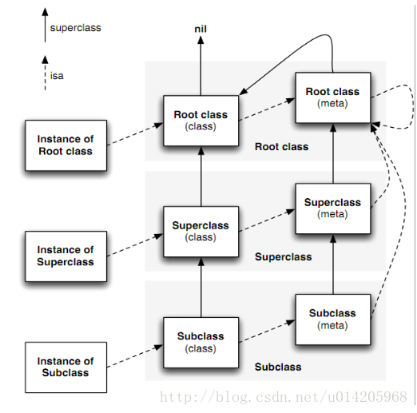
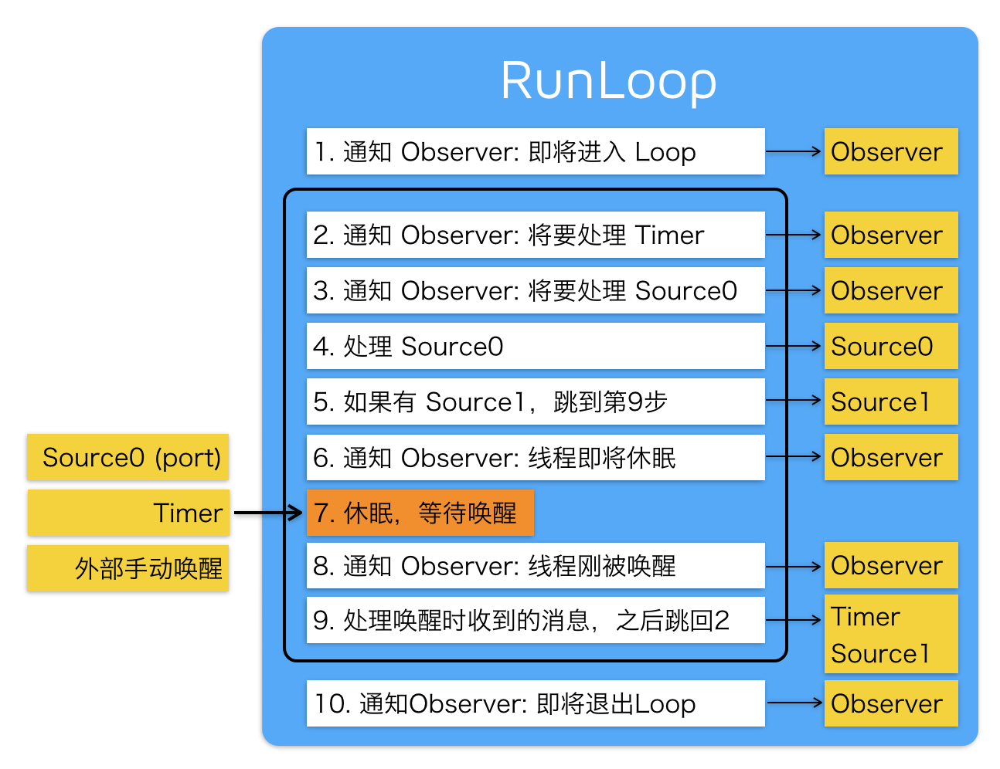

最近准备复习一下面试题，看到了J_Knight_在18年的出一套 iOS 高级面试题尝试着回答一下题目，由于水平有限，如有错误的地方，请大家多多指教。
目录
iOS 基础题
1. 分类和扩展有什么区别？可以分别用来做什么？分类有哪些局限性？分类的结构体里面有哪些成员？
2. @synthesize 和 @dynamic 分别有什么作用？
5.讲一下atomic的实现机制；为什么不能保证绝对的线程安全（最好可以结合场景来说）？
6. 被weak修饰的对象在被释放的时候会发生什么？是如何实现的？知道sideTable么？里面的结构可以画出来么？
8. 关联对象有什么应用，系统如何管理关联对象？其被释放的时候需要手动将所有的关联对象的指针置空么？
9. KVO的底层实现？如何取消系统默认的KVO并手动触发（给KVO的触发设定条件：改变的值符合某个条件时再触发KVO）？
10. KVC 的底层实现？通过 KVC 修改属性会触发 KVO 么？直接改成员变量呢？
11. Autoreleasepool所使用的数据结构是什么？AutoreleasePoolPage结构体了解么？
12. 对象方法和类方法有什么区别？类方法里的 self 是什么？类方法存在哪里，为什么要有元类？
13. 讲一下对象，类对象，元类，跟元类结构体的组成以及他们是如何相关联的？为什么对象方法没有保存的对象结构体里，而是保存在类对象的结构体里？
15. iOS中内省的几个方法？class方法和objc_getClass方法有什么区别?
16. ==、isEqual:、isEqualToString: 有什么区别？
18. 在运行时创建类的方法objc_allocateClassPair的方法名尾部为什么是pair（成对的意思）？
19. +load 和 +initialize 的调用时机，以及父子类、分类的调用顺序？
21. 为什么在block外部使用__weak修饰的同时需要在内部使用__strong修饰？
23. RunLoop的作用是什么？它的内部工作机制了解么？（最好结合线程和内存管理来说）
24. 有没有用过 performSelector:？NSTimer 在子线程怎么跑，为什么不准，循环引用怎么断？
iOS实战题
29. 反射是什么？可以举出几个应用场景么？（知道多少说多少）
30. 有哪些场景是NSOperation比GCD更容易实现的？（或是NSOperation优于GCD的几点，知道多少说多少）
31. 为什么 AFN 3.0 要把 operationQueue.maxConcurrentOperationCount 设为 1？2.0 为什么不需要？
32. App 启动优化策略？最好结合启动流程来说（main()函数的执行前后都分别说一下，知道多少说多少）
33. App 无痕埋点的思路了解么？你认为理想的无痕埋点系统应该具备哪些特点？（知道多少说多少）
34. 你知道有哪些情况会导致app崩溃，分别可以用什么方法拦截并化解？（知道多少说多少）
35. 不使用第三方，如何把已经上线的崩溃定位到具体类和方法？
36. 你知道有哪些情况会导致app卡顿，分别可以用什么方法来避免？（知道多少说多少）
网络题
41. HTTPS的握手流程？为什么密钥的传递需要使用非对称加密？双向认证了解么？
43. 如何用Charles抓HTTPS的包？其中原理和流程是什么？
计算机系统题
53. 有哪几种锁？各自的原理？它们之间的区别是什么？最好可以结合使用场景来说
设计模式题和架构 & 设计题（由于水平有限，就不误人子弟了）
54. 单例有几种写法？怎么销毁？不用 dispatch_once 怎么写？项目里单例用来做什么？
数据结构&算法题
56. 链表和数组的区别是什么？插入和查询的时间复杂度分别是多少？
58. 排序题：冒泡排序，选择排序，插入排序，快速排序（二路，三路）能写出那些？
59. 链表题：如何检测链表中是否有环？如何删除链表中等于某个值的所有节点？
60. 数组题：如何在有序数组中找出和等于给定值的两个元素？如何合并两个有序的数组之后保持有序？
61. 二叉树题：如何反转二叉树？如何验证两个二叉树是完全相等的？
1.分类和扩展有什么区别？可以分别用来做什么？分类有哪些局限性？分类的结构体里面有哪些成员？
- 分类主要用来为某个类添加方法，属性，协议（我一般用来为系统的类扩展方法或者把某个复杂的类的按照功能拆到不同的文件里）
- 类扩展主要用来给某个类添加原来没有的成员变量、属性和方法。注：方法只是声明（我一般用扩展来声明私有属性，或者把.h的只读属性重写成可读写的）
分类和扩展的区别：
- 分类是在运行时把分类信息合并到类信息中，而扩展是在编译时，就把信息合并到类中的
- 分类声明的属性，只会生成getter/setter方法的声明，不会自动生成成员变量和getter/setter方法的实现，而扩展会
- 分类不能为类添加实例变量，而类扩展可以
- 分类可以给类添加方法实现，而类扩展只能声明私有方法、属性和实例变量，方法实现要写在主类的 @implementation 中
分类的局限性：
- 无法为类添加实例变量，但可通过关联对象进行实现，注：关联对象中内存管理没有weak，用时需要注意野指针的问题，可通过其他办法来实现，具体可参考iOS weak 关键字漫谈
- 分类的方法若和类中原本的实现重名，会覆盖原本方法的实现，注：并不是真正的覆盖
- 多个分类的方法重名，会调用最后编译的那个分类的实现
分类的结构体里有哪些成员
struct category_t {
const char *name; //名字
classref_t cls; //类的引用
struct method_list_t *instanceMethods;//实例方法列表
struct method_list_t *classMethods;//类方法列表
struct protocol_list_t *protocols;//协议列表
struct property_list_t *instanceProperties;//实例属性列表
// 此属性不一定真正的存在
struct property_list_t *_classProperties;//类属性列表
};
2. @synthesize 和 @dynamic 分别有什么作用？
这两个关键字都是在告诉编译器：属性的存取方法要不要由编译器生成。@property 只负责声明 getter/setter。现代 Clang 在你没写存取方法时会自动合成，等价于写了 @synthesize prop = _prop;，所以平时可以不手写 @synthesize。
@synthesize：编译器生成存取方法和成员变量
- 没实现 getter/setter 时，编译器生成
_prop成员变量，以及对应的存取方法。内存语义（strong/copy/weak/assign）写在生成的方法里。 - 只实现了其中一个时，另一个仍会自动生成，成员变量也会有。
- getter 和 setter 都自己实现了，编译器就不再生成成员变量。还想用
_prop，需要显式写@synthesize prop = _prop;。 - 也可以改成员变量名：
@synthesize prop = prop;。协议里的属性在实现类中有时也要显式 synthesize。
@dynamic：编译期不生成，运行时再给实现
@dynamic 告诉编译器不要合成存取方法，也不要警告「没有实现」。实现可以来自：
- 你稍后手写的 getter/setter；
resolveInstanceMethod:里class_addMethod动态补上；- 消息转发到别的对象。Core Data 的
NSManagedObject就是典型，属性访问最终进到primitiveValueForKey:那一套。
如果标记了 @dynamic 却始终没有实现，编译能过，运行到 obj.prop 或 obj.prop = x 才会 unrecognized selector。这和「编译期绑定」相反：存取方法留到运行时才确定。
一句话：
@synthesize让编译器把 getter/setter 和成员变量生成出来；@dynamic让编译器什么都不生成，实现推迟到运行时。两个都没写时，现在的编译器默认按 synthesize 处理。
3. 深拷贝和浅拷贝有什么区别？
浅拷贝和深拷贝的差别不在「有没有新指针」，而在新对象里装的东西还是不是原来那一份。浅拷贝可以有一个新容器，但元素仍是原来的对象；深拷贝要连元素一起复制。集合再套集合时，只复制一层还是每一层都复制，要单独说。
copy 和 mutableCopy 先分清
copy希望得到不可变对象，mutableCopy得到可变对象。这是可变性，不是深浅。- 不可变对象的
copy经常直接返回自己（引用计数 +1）。内容不可能被改，没必要再分配一份。所以[immutableString copy] == immutableString往往为真。 - 可变对象的
copy会做出一份新的不可变副本，之后改原来的可变对象，不影响这份副本。 - 对
NSArray/NSDictionary/NSSet，copy和mutableCopy默认都只复制容器，元素仍是同一批指针。这是浅拷贝。
怎样才算深拷贝
- 一层深拷贝：
[[NSArray alloc] initWithArray:array copyItems:YES]，对每个元素发copy。元素如果自己又是数组，里面那层还是共享的。 - 多层深拷贝：元素也实现
NSCoding时，用NSKeyedArchiver归档再解档；或者自己按结构递归复制。 - 自定义类要想被
copy，需要实现NSCopying。只复制指针字段就是浅的，字段再copy才往深处走。
一句话：浅拷贝共享内部对象，深拷贝连内部一起复制。
mutableCopy只保证容器可变，不保证元素也被复制。
4. NSString 为什么要用 copy 修饰？
NSString 本身不可变，用 copy 不是为了「字符串会变」，而是为了挡住外面塞进来的 NSMutableString。
@property (nonatomic, copy) NSString *name;
NSMutableString *text = [@"hello" mutableCopy];
person.name = text; // copy：属性里是一份不可变副本
[text appendString:@"!"];
// person.name 仍是 @"hello"。如果属性是 strong，这里会变成 @"hello!"
- 赋进来的本来就是不可变
NSString时，copy通常返回原对象，和strong一样，只是 retain。 - 赋进来的动态类型是
NSMutableString时，copy生成新的不可变字符串。之后别人再改那份可变字符串，属性值不动。 NSArray、NSDictionary属性同样用copy，理由一样：挡住NSMutableArray之类的后续修改。这只隔离容器本身，元素是否深拷贝见上一题。- 属性类型如果就是
NSMutableString，不要写copy。copy得到的是不可变NSString，再当可变字符串去appendString:会崩。这种属性用strong，调用方自己保证不要把内部对象交出去。
一句话：
copy是在 setter 里做一次不可变快照，防止外部用可变子类把属性值改掉。来源已经不可变时，它和strong没有行为差别。
5.讲一下atomic的实现机制；为什么不能保证绝对的线程安全（最好可以结合场景来说）？
- atomic的实现机制
atomic是property的修饰词之一，表示是原子性的，使用方式为@property(atomic)int age;,此时编译器会自动生成getter/setter方法，最终会调用objc_getProperty和objc_setProperty方法来进行存取属性。若此时属性用atomic修饰的话，在这两个方法内部使用os_unfair_lock来进行加锁，来保证读写的原子性。锁都在PropertyLocks中保存着（在iOS平台会初始化8个，mac平台64个），在用之前，会把锁都初始化好，在需要用到时，用对象的地址加上成员变量的偏移量为key，去PropertyLocks中去取。因此存取时用的是同一个锁，所以atomic能保证属性的存取时是线程安全的。注：由于锁是有限的，不用对象，不同属性的读取用的也可能是同一个锁 - atomic为什么不能保证绝对的线程安全？
- atomic在getter/setter方法中加锁，仅保证了存取时的线程安全，假设我们的属性是
@property(atomic)NSMutableArray *array;可变的容器时,无法保证对容器的修改是线程安全的 - 在编译器自动生产的getter/setter方法，最终会调用
objc_getProperty和objc_setProperty方法存取属性，在此方法内部保证了读写时的线程安全的，当我们重写getter/setter方法时，就只能依靠自己在getter/setter中保证线程安全
- atomic在getter/setter方法中加锁，仅保证了存取时的线程安全，假设我们的属性是
6. 被weak修饰的对象在被释放的时候会发生什么？是如何实现的？知道sideTable么？里面的结构可以画出来么？
-
被weak修饰的对象在被释放的时候会发生什么？
被weak修饰的对象在被释放的时候，会把weak指针自动置位nil -
weak是如何实现的？
runTime会把对weak修饰的对象放到一个全局的哈希表中，用 weak 指向的对象内存地址作为 key，value 是所有指向该对象的 weak 指针地址组，
当对象释放时，runtime 会通过该对象自身的内存地址在哈希表中找到对应的 weak 指针数组，遍历该数组，并将其中每个 weak 指针置为 nil -
sideTable的结构
struct SideTable {
spinlock_t slock;//操作SideTable时用到的锁
RefcountMap refcnts;//引用计数器的值
weak_table_t weak_table;//存放weak指针的哈希表
};
7. 什么是野指针？如何检测？
野指针是还留在手里、但指向的对象已经释放（或那块内存已经不再是这个对象）的指针。它不是 nil。nil 发消息在 Objective-C 里是安全的空操作；野指针发消息会落到一块无效内存上，常见结果是 EXC_BAD_ACCESS，而且崩溃点经常不在真正释放的那一行。
哪些写法会留下野指针
- 对象用
assign或unsafe_unretained持有。对象释放后指针不会被置空。MRC 里assign修饰对象、少写了一次 release 之后又多访问，也是同一类问题。 weak不会变成野指针。释放时 runtime 会把登记过的 weak 指针置为nil，这套表在 sideTable 里，见 weak 那一题。- 关联对象没有
weak策略。用assign语义去关联一个会被释放的对象，宿主还在、被关联对象已经没了，再取出来就是野指针。
怎么检测
- Zombie Objects：Scheme 里打开 Enable Zombie Objects（环境变量
NSZombieEnabled）。对象本该释放时被换成_NSZombie_，再给它发消息会打印「向已释放的某类发了某个 selector」，而不是随机跳飞。它故意不真正 free，所以只适合调试，线上不能开。 - Address Sanitizer：给堆分配加红区，越界和 use-after-free 会在访问那一刻停住，并带上分配栈和释放栈。
- Guard Malloc：一对象一页，释放后的页设成不可访问，野指针一碰就崩在现场。很慢，只用来复现疑难问题。
- 用
%p打印指针值本身通常不会解引用对象；真正危险的是再向这个地址发消息或访问成员。
一句话：野指针是「人没了，地址还在」。对象属性用
weak而不是assign；调试用 Zombie 看是谁被提前释放，用 ASan 把现场钉死。
8. 关联对象有什么应用，系统如何管理关联对象？其被释放的时候需要手动将所有的关联对象的指针置空么？
- 关联对象有什么应用？
一般用于在分类中给类添加实例变量 - 系统如何管理关联对象？
首先系统中有一个全局AssociationsManager,里面有个AssociationsHashMap哈希表，
哈希表中的key是对象的内存地址，value是ObjectAssociationMap,也是一个哈希表，
其中key是我们设置关联对象所设置的key，value是ObjcAssociation,里面存放着关联对象设置的值和内存管理的策略。
已void objc_setAssociatedObject(id object, const void * key,id value, objc_AssociationPolicy policy)为例，
首先会通过AssociationsManager获取AssociationsHashMap，
然后以object的内存地址为key，从AssociationsHashMap中取出ObjectAssociationMap，
若没有，则新创建一个ObjectAssociationMap，
然后通过key获取旧值，以及通过key和policy生成新值ObjcAssociation(policy, new_value)，
把新值存放到ObjectAssociationMap中，
若新值不为nil，并且内存管理策略为retain，则会对新值进行一次retain，
若新值为nil，则会删除旧值，
若旧值不为空并且内存管理的策略是retain，则对旧值进行一次release - 其被释放的时候需要手动将所有的关联对象的指针置空么？
注：对这个问题我的理解是：当对象被释放时，需要手动移除该对象所设置的关联对象吗？
不需要，因为在对象的dealloc中，若发现对象有关联对象时，会调用_object_remove_assocations方法来移除所有的关联对象，并根据内存策略，来判断是否需要对关联对象的值进行release
9. KVO的底层实现？如何取消系统默认的KVO并手动触发（给KVO的触发设定条件：改变的值符合某个条件时再触发KVO）？
-
KVO的底层实现？
-
当某个类的属性被观察时，系统会在运行时动态的创建一个该类的子类。并且把改对象的isa指向这个子类
-
假设被观察的属性名是
name，若父类里有setName:或这_setName:,那么在子类里重写这2个方法，若2个方法同时存在，则只会重写setName:一个（这里和KVCset时的搜索顺序是一样的） -
若被观察的类型是NSString,那么重写的方法的实现会指向
_NSSetObjectValueAndNotify这个函数，若是Bool类型，那么重写的方法的实现会指向_NSSetBoolValueAndNotify这个函数，这个函数里会调用willChangeValueForKey:和didChangevlueForKey:,并且会在这2个方法调用之间，调用父类set方法的实现 -
系统会在
willChangeValueForKey:对observe里的change[old]赋值，取值是用valueForKey:取值的,didChangevlueForKey:对observe里的change[new]赋值，然后调用observe的这个方法- (void)observeValueForKeyPath:(nullable NSString *)keyPath ofObject:(nullable id)object change:(nullable NSDictionary<NSKeyValueChangeKey, id> *)change context:(nullable void *)context; -
当使用KVC赋值的时候,在NSObject里的
setValue:forKey:方法里,若父类不存在setName:或这_setName:这些方法,会调用_NSSetValueAndNotifyForKeyInIvar这个函数，这个函数里同样也会调用willChangeValueForKey:和didChangevlueForKey:,若存在则调用
-
-
如何取消系统默认的KVO并手动触发（给KVO的触发设定条件：改变的值符合某个条件时再触发KVO）？
举例：取消Person类age属性的默认KVO，设置age大于18时，手动触发KVO
+ (BOOL)automaticallyNotifiesObserversForKey:(NSString *)key {
if ([key isEqualToString:@"age"]) {
return NO;
}
return [super automaticallyNotifiesObserversForKey:key];
}
- (void)setAge:(NSInteger)age {
if (age > 18 ) {
[self willChangeValueForKey:@"age"];
_age = age;
[self didChangeValueForKey:@"age"];
}else {
_age = age;
}
}
10. KVC 的底层实现？通过 KVC 修改属性会触发 KVO 么？直接改成员变量呢？
KVC 是按名字访问属性：setValue:forKey: 和 valueForKey:。名字不是编译期绑定的，NSObject 会按固定顺序搜索存取方法，找不到再考虑成员变量。
setValue:forKey: 的搜索顺序
- 找
set<Key>:，再找_set<Key>:。找到就调用，参数传进去。 - 两个都没有，看
+accessInstanceVariablesDirectly。默认是YES。返回NO就走setValue:forUndefinedKey:，默认抛NSUnknownKeyException。 - 允许直接访问成员变量时，按
_<key>、_is<Key>、<key>、is<Key>的顺序找实例变量，找到就写入。 - 成员变量也没有，同样进入
setValue:forUndefinedKey:。
取值 valueForKey: 的顺序是：get<Key>、<key>、is<Key>，然后在允许访问成员变量时找 _<key>、_is<Key>、<key>、is<Key>，再没有就 valueForUndefinedKey:。给非对象标量设 nil 会进 setNilValueForKey:，默认也是抛异常。
会不会触发 KVO
- 通过 KVC 改，会触发。 找到了 setter，就走 setter，自动 KVO 由 setter 上的
willChangeValueForKey:/didChangeValueForKey:发出。没找到 setter、KVC 自己写成员变量时，NSObject的实现会把这次写入包在willChange/didChange里，观察者一样能收到。所以「只有成员变量、没有属性」只要accessInstanceVariablesDirectly为YES，setValue:forKey:仍然会通知 KVO。 - 你自己写
_age = 1，不会触发。 这是普通赋值，没有人帮你发通知。要通知就改走 setter，或者自己调用willChangeValueForKey:和didChangeValueForKey:。手动 KVO 的写法见 KVO 那一题。
一句话：KVC 先找 setter，没有才按顺序写成员变量，并且自己会发 KVO；绕过 KVC、直接改成员变量则不会。
11. Autoreleasepool所使用的数据结构是什么？AutoreleasePoolPage结构体了解么？
Autoreleasepool是由多个AutoreleasePoolPage以双向链表的形式连接起来的，
Autoreleasepool的基本原理：在每个自动释放池创建的时候，会在当前的AutoreleasePoolPage中设置一个标记位，在此期间，当有对象调用 autorelease 时，会把该对象的指针（即对象内存地址）添加到当前 AutoreleasePoolPage 中；若当前页已满，则初始化新页，并通过双向链表连接，同时把新页设为 hotPage。当自动释放池 pop 时，会从当前栈顶开始依次 pop ，对每个指针指向的对象调用 release，直到遇到边界标记（POOL_BOUNDARY / 哨兵）为止。
AutoreleasePoolPage结构如下
class AutoreleasePoolPage {
magic_t const magic;
id *next;//下一个存放autorelease对象的地址
pthread_t const thread; //AutoreleasePoolPage 所在的线程
AutoreleasePoolPage * const parent;//父节点
AutoreleasePoolPage *child;//子节点
uint32_t const depth;//深度,也可以理解为当前page在链表中的位置
uint32_t hiwat;
}
12. 对象方法和类方法有什么区别？类方法里的 self 是什么？类方法存在哪里，为什么要有元类？
实例方法存在类对象的方法列表里，类方法存在元类的方法列表里。两条查找路径不共用一张表，所以两边可以起同一个名字，调用时不会撞车。
能做什么，不能做什么
- 实例方法里的
self是实例，可以访问成员变量，也可以通过[self class]或类名去调类方法。 - 类方法里的
self是类对象（Class），不是实例。可以用它调别的类方法，例如[self alloc]；不能用它调实例方法，也没有成员变量可读。 - 实例方法里写
[self classMethod]不会去元类里找。消息是发给实例的，只查类对象的实例方法列表。要调类方法得写成[[self class] classMethod]。
类方法为什么要放在元类里
类对象自己也是对象。给它发消息时，runtime 同样顺着 isa 去找「这个对象的类」，再到那张方法列表里查 selector。类对象的 isa 指向元类，所以类方法就放在元类里。没有元类的话，类方法没有地方可放，+alloc 这类消息也无从查找。
根元类（NSObject 的元类）的 isa 指向自己，它的 superclass 指向 NSObject 类对象。因此类方法沿着元类继承链找不到时，会落到 NSObject 的实例方法上。对象、类对象、元类的 isa 和结构体组成，见 对象、类对象、元类 那一题。
一句话：实例方法属于类，类方法属于元类。类方法里的
self是类对象，只能当类来用。
13. 讲一下对象，类对象，元类，跟元类结构体的组成以及他们是如何相关联的？为什么对象方法没有保存的对象结构体里，而是保存在类对象的结构体里？
- 讲一下对象，类对象，元类，跟元类结构体的组成以及他们是如何相关联的？
对象的结构体里存放着isa和成员变量的值，isa指向类对象。 类对象的isa指向元类，元类的isa指向NSObject的元类。 类对象和元类的结构体有isa、superclass、cache、bits，bits里存放着class_rw_t的指针。 放一张经典的图
- 为什么对象方法没有保存的对象结构体里，而是保存在类对象的结构体里？
方法是每个对象互相可以共用的，如果每个对象都存储一份方法列表太浪费内存，由于对象的isa是指向类对象的，当调用的时候，直接去类对象中查找就行了。可以节约很多内存空间的
14. class_ro_t和class_rw_t的区别？
class_rw_t提供了运行时对类拓展的能力，而class_ro_t存储的大多是类在编译时就已经确定的信息。二者都存有类的方法、属性（成员变量）、协议等信息，不过存储它们的列表实现方式不同。简单的说class_rw_t存储列表使用的二维数组，class_ro_t使用的一维数组。 class_ro_t存储于class_rw_t结构体中，是不可改变的。保存着类的在编译时就已经确定的信息。而运行时修改类的方法，属性，协议等都存储于class_rw_t中
15. iOS中内省的几个方法？class方法和objc_getClass方法有什么区别?
- 什么是内省？
在计算机科学中，内省是指计算机程序在运行时（Run time）检查对象（Object）类型的一种能力，通常也可以称作运行时类型检查。 不应该将内省和反射混淆。相对于内省，反射更进一步，是指计算机程序在运行时（Run time）可以访问、检测和修改它本身状态或行为的一种能力。
-
iOS中内省的几个方法？
- isMemberOfClass //对象是否是某个类型的对象
- isKindOfClass //判断对象是否为指定类或其子类的实例。
- isSubclassOfClass //某个类对象是否是另一个类型的子类
- isAncestorOfObject //某个类对象是否是另一个类型的父类
- respondsToSelector //是否能响应某个方法
- conformsToProtocol //是否遵循某个协议
-
class方法和object_getClass方法有什么区别?
实例class方法就直接返回object_getClass(self),类class方法直接返回self，而object_getClass(类对象)，则返回的是元类
16. ==、isEqual:、isEqualToString: 有什么区别？
三个都在问「是不是同一个」，比的层次不一样。
| 比什么 | 什么时候用 | |
|---|---|---|
== | 两个指针的值，也就是地址是否相同 | 判断是不是同一个对象；和 nil 比较 |
isEqual: | 业务上算不算相等。NSObject 的默认实现就是 ==，NSString、NSArray、NSNumber 等各自按内容重写 | 比较两个对象的值。类型可以不同，内部会先看类型是否可比 |
isEqualToString: | 两个字符串的字符内容 | 已经确定两边都是字符串时。少一次类型分支，也避免把别的类型送进来 |
- 内容相同的两个
NSString，==可能为假（不是同一个对象），isEqual:和isEqualToString:为真。常量字符串有时会被合并成同一个对象，==碰巧为真，不能依赖这一点。 - 重写了
isEqual:就必须重写hash，保证相等的对象哈希相同，否则放进NSSet/NSDictionary会找不到。 - 给
nil发isEqual:或isEqualToString:得到的是NO/nil，不会崩。isEqualToString:的接收者应当是NSString，不要拿到一个任意id就调用它。
一句话：
==比地址，isEqual:比对象定义的相等，isEqualToString:只比字符串内容。
17. objc 向一个对象发送消息时，发生了什么？
向对象发消息，编译器会收成一次 objc_msgSend(receiver, selector, ...)。具体调哪个函数指针，要到运行时才查出来。
- receiver 是 nil：直接返回。对象返回值是
nil，整数返回值是 0，不会崩。不要指望 nil 接收者去执行你的方法。 - 查缓存：用 receiver 的 isa 找到类，先查这个类的方法缓存。命中就把 IMP 取出来调用。
- 查方法列表：缓存没有，就扫当前类的方法列表；还没有就顺着 superclass 继续，每一级都先看缓存再看列表，直到根类。
- 找到了：调用 IMP，并把 selector 到 IMP 的映射写进这个类的缓存。
- 整条链都没有，进入三次补救，失败才崩：
- 动态解析：
+resolveInstanceMethod:或+resolveClassMethod:。这里可以用class_addMethod把实现补上，然后 runtime 再查一次。 - 快速转发：
-forwardingTargetForSelector:返回另一个对象，消息原样交给它，开销最小。 - 完整转发：
-methodSignatureForSelector:先给出签名，再用NSInvocation进入-forwardInvocation:。这里可以改目标、改参数，或转给别的对象。
- 动态解析：
- 三步都没接住，就到
-doesNotRecognizeSelector:，抛unrecognized selector sent to instance。
类方法走同一套流程，只是 receiver 是类对象，从元类开始查。这也是元类要存在的原因，见 对象方法和类方法。
一句话：发消息就是
objc_msgSend按 isa 查缓存和方法列表；找不到时依次是动态解析、快速转发、完整转发，最后才崩。
18. 在运行时创建类的方法objc_allocateClassPair的方法名尾部为什么是pair（成对的意思）？
因为此方法会创建一个类对象以及元类，正好组成一队
Class objc_allocateClassPair(Class superclass, const char *name,
size_t extraBytes){
...省略了部分代码
//生成一个类对象
cls = alloc_class_for_subclass(superclass, extraBytes);
//生成一个类对象元类对象
meta = alloc_class_for_subclass(superclass, extraBytes);
objc_initializeClassPair_internal(superclass, name, cls, meta);
return cls;
}
19. +load 和 +initialize 的调用时机，以及父子类、分类的调用顺序？
+load 和 +initialize 都会在类投入使用的过程中被调用，但调用者、时机和继承行为都不一样。业务初始化不要放进 +load。
+load | +initialize | |
|---|---|---|
| 时机 | 镜像加载、类和分类被 runtime 接进来时，通常在 main 之前 | 这个类第一次收到消息之前 |
| 怎么调用 | 直接拿方法地址调用，不走 objc_msgSend | 走消息发送 |
| 没实现时 | 跳过，不会因为继承去调父类的那一份 | 会继承父类实现。父类方法体可能再跑一次，但 self 是子类 |
| 分类 | 类和每个分类的 +load 都会执行 | 消息发送只能命中一个实现，分类里的 +initialize 会盖住类里的 |
| 顺序 | 先父类再子类；一个类自己的 +load 先于它的分类。+load 全部走完才轮到分类 | 先保证父类初始化完，再初始化子类 |
+load 不要依赖「谁先编译」
同一个镜像里，没有父子关系的类谁先 +load，跟链接顺序有关，不能当成业务规则。分类的 +load 也是每个都调用，不是「后编译的覆盖先编译的」——那是普通实例方法的查找顺序，不是 +load。这里也不适合做锁、网络或依赖别的类已经 +initialize 完的事情，容易和 dyld 的加载过程卡在一起。启动阶段会跑到 +load，和启动耗时的关系见启动优化那一题。
+initialize 里先看 self
子类没实现 +initialize 时，父类的实现会被用来初始化子类，方法里的 self 是子类。每个类仍然只初始化一次，但父类这份代码会进来多次。只想在父类自己初始化时做事，要判断 self == [TheClass class]。
一句话：
+load是加载时按函数指针点名，类和分类各跑各的；+initialize是第一次收消息时走消息机制，会继承，分类可以盖住类。
20. 一个int变量被__block修饰与否的区别？
int变量被__block修饰之后会被包装成一个对象,如__block int age会被包装成下面这样
struct __Block_byref_age_0 {
void *__isa;
__Block_byref_age_0 *__forwarding; //指向自己
int __flags;
int __size;
int age;//包装的具体的值
};
// age = 20;会被编译成下面这样
(age.__forwarding->age) = 20;
Block 捕获变量的本质：值拷贝 + const 限定，与 __block 的 byref 包装
一、不加 __block：本质是值拷贝
Block 捕获外部局部变量，本质是值拷贝。编译器会把 Block 用到的外部局部变量作为成员变量追加到 Block 结构体里，初始化时传入的是变量当时的值，并且这个成员变量被 const 限定。所以：
- Block 捕获普通非静态局部变量时按值复制，Block 内是捕获时的值副本；外部变量本身之后再赋值，Block 内仍是旧值。
- 该捕获值通常作为 Block 结构体中的
const成员，Block 内不能直接修改，否则编译报错（__block等例外）。
int age = 10;
void (^block)(void) = ^{
// age 的值被复制为 Block 结构体中的 const 成员
// （更准确地说：Block 内捕获的 age 是 const 的）
NSLog(@"age = %d", age);
// age = 30; // 编译报错：Block 内不能修改捕获的 const 变量
};
age = 20; // 外部给原变量 age 重新赋值，不影响 Block 内已复制的值
block(); // 仍然打印 10：Block 内拿到的是捕获时的值副本
二、对象类型：捕获的是指针的值（对象地址）
对于对象类型，捕获的是指针的值，也就是对象地址。这个指针成员同样被 const 限定，所以可以通过它修改对象内部属性（对象在堆上），但不能给这个指针重新赋值指向别的对象。原理和基本类型一致：值拷贝 + const 限定。
NSMutableArray *list = [NSMutableArray array];
void (^block)(void) = ^{
[list addObject:@"A"]; // 可以：const 指针仍能操作堆上对象
// list = [NSMutableArray array]; // 不可以：指针成员是 const，不能重新指向
};
三、加上 __block：包装成 __block_byref_xxx，靠 __forwarding 指向同一份变量
加上 __block 后，编译器不再直接拷贝值，而是生成一个 __block_byref_xxx 结构体来包装原变量，Block 里存的是指向这个结构体的指针。关键在 __forwarding：Block 在栈上时访问栈上的结构体；当 Block 被拷贝到堆时，这个结构体也会被拷到堆，__forwarding 会指向堆上的新地址，栈上旧结构体的 __forwarding 也被调整为指向堆上那份。这样无论从哪边访问，最终都落到堆上同一份变量，修改才能生效。
__block int age = 10;
void (^block)(void) = ^{
age = 30; // 编译为 (age.__forwarding->age) = 30;
};
age = 20;
block = [block copy]; // Block 与 byref 结构体一起上堆，__forwarding 改指堆上那份
block();
NSLog(@"%d", age); // 30：栈上、堆上访问的都是同一份变量
四、对比一览
| 对比维度 | 不加 __block | 加 __block |
|---|---|---|
| Block 结构体里存的 | 变量的值（作为 const 成员） | 指向 __block_byref_xxx 结构体的指针 |
| 外部变量后续变化 | 感知不到，Block 里仍是捕获时的值副本 | 同一份变量，外部与 Block 内的修改互相可见 |
| Block 内能否赋值 | 不能，编译报错 | 能，经 __forwarding 写到同一份内存 |
| 变量生命周期 | 与 Block 无关，只是值拷贝 | 与 Block 绑定：Block 拷贝到堆时变量一起上堆 |
| 对象类型 | 拷贝指针值：可改对象属性，不可改指针指向 | 指针放在 byref 结构体中且不被 const 限定：可重新指向别的对象 |
五、一句话总结
普通捕获是值拷贝，成员被
const限定，所以只读、是值副本；__block是把变量包装成结构体，让变量生命周期和 Block 绑定，Block 上堆时变量跟着上堆，并通过__forwarding保证访问指向正确的那一份，从而实现可修改。
21. 为什么在block外部使用__weak修饰的同时需要在内部使用__strong修饰？
用__weak修饰之后block不会对该对象进行retain，只是持有了weak指针，在block执行之前或执行的过程时，随时都有可能被释放，将weak指针置位nil，产生一些未知的错误。在内部用__strong修饰，会在block执行时，对该对象进行一次retain，保证在执行时若该指针不指向nil，则在执行过程中不会指向nil。但有可能在执行执行之前已经为nil了
22. Block 为什么用 copy 修饰？
Block 是对象。捕获了自动变量的 Block 字面量一开始在栈上，跟着当前栈帧走。栈帧结束之后如果还有人拿着这个指针，就是悬空指针。属性用 copy，是为了在持有它的时候把栈 Block 拷到堆上。
- MRC：
retain栈 Block 不会把它搬到堆上，属性必须写copy。已经在堆上的 Block 再copy，就是 retain。 - ARC：把栈 Block 赋给
strong或copy属性时，编译器都会插入拷贝到堆的操作，两者效果通常一样。copy仍然是文档和习惯上的写法，读代码的人能看出「这个 Block 要活过当前作用域」。assign不会拷贝，返回之后再调用就会野。 - 没有捕获自动变量的 Block 放在全局区，
copy等于 retain，不发生拷贝。 copy解决的是 Block 自己的存储位置。它和__block、__weak/__strong不是一回事：后两题分别在说捕获的变量怎么改、以及 Block 和对象谁持有谁。
一句话：栈上的 Block 不能当成员长期留着，
copy把它放到堆上。ARC 下strong也会做这件事，属性仍写成copy。
23. RunLoop的作用是什么？它的内部工作机制了解么？（最好结合线程和内存管理来说）
- 什么是RunLoop 一般来讲，一个线程一次只能执行一个任务，执行完成后线程就会退出。如果我们需要一个机制，让线程能随时处理事件但并不退出。这种模型通常被称作 Event Loop。 Event Loop 在很多系统和框架里都有实现，比如 Node.js 的事件处理，比如 Windows 程序的消息循环，再比如 OSX/iOS 里的 RunLoop。实现这种模型的关键点在于：如何管理事件/消息，如何让线程在没有处理消息时休眠以避免资源占用、在有消息到来时立刻被唤醒。
- RunLoop的作用是什么？（由于水平有限，不是很理解作者的本意，我对题目的理解是，利用RunLoop可以做哪些事情？）
- 保持程序的持续运行，在iOS线程中，会在main方法给主线程创建一个RunLoop，保证主线程不被销毁
- 处理APP中的各种事件（如touch，timer，performSelector等）
- 界面更新
- 手势识别
- AutoreleasePool
- 系统在主线程RunLoop注册了2个observer
- 第一个observe监听即将进入RunLoop，调用_objc_autoreleasePoolPush()创建自动释放池
- 第二个observe监听两个事件，进入休眠之前和即将退出RunLoop
- 在进入休眠之前的回调里，会先释放自动释放池，然后在创建一个自动释放池
- 在即将退出的回调里，会释放自动释放池
- 线程保活
- 监测卡顿
- RunLoop的内部逻辑（下图来自于YY大神的博客）

结合线程与内存管理看 RunLoop 的内部机制
一、RunLoop 与线程：一一对应，按需创建、随线程销毁
- RunLoop 和线程是一一对应的，这层映射关系保存在全局字典中（以线程为 key、RunLoop 为 value）；一个线程最多只有一个 RunLoop，RunLoop 也不能跨线程共享。
- 主线程的 RunLoop 在程序启动时（
UIApplicationMain）默认创建并自动运行，这正是主线程执行完main里的代码后不会退出、能持续响应事件的原因。 - 子线程的 RunLoop 是懒加载的：第一次调用
[NSRunLoop currentRunLoop]时才创建，线程结束时销毁。所以子线程要保活，必须在 RunLoop 里先添加 Source 或 Timer，再调用run，否则它会因为「无事可做」直接返回。
二、一次循环做了什么：通知 Observer → 处理事件 → 休眠 → 被唤醒
- RunLoop 每次循环会先通知 Observer 即将进入（
kCFRunLoopEntry），随后依次通知即将处理 Timer、即将处理 Source0、即将休眠（kCFRunLoopBeforeWaiting）、已被唤醒（kCFRunLoopAfterWaiting）、即将退出（kCFRunLoopExit）。 - 接着按当前 Mode 找到可处理的
Timer、Source0（如 touch 事件、performSelector:onThread:）或Observer回调并执行；Source1基于 mach port，收到消息时可以直接把 RunLoop 唤醒。 - 处理完成后如果没有事件可做，就调用
mach_msg()进入休眠，把 CPU 让给其他线程；被 mach port 消息、timer 到点或外部CFRunLoopWakeUp唤醒后，继续下一轮循环。 - 这套「有事立刻处理、没事休眠让出 CPU」的机制，既是 RunLoop 保持线程存活又不空耗资源的关键，也是卡顿监控（统计 BeforeWaiting 与 AfterWaiting 之间的耗时）能落地的原因。
三、Mode 决定同一时刻哪些 Source/Timer 能被处理
RunLoop 每次只能运行在一个 Mode 下，只有当前 Mode 中的 Source / Timer / Observer 才会被处理；要切换 Mode 必须退出当前循环，再用新的 Mode 重新进入。
| Mode | 什么时候生效 | 说明 |
|---|---|---|
NSDefaultRunLoopMode | App 空闲、界面没有滚动 | 默认 Mode，普通 Timer、Source 一般加在这里 |
UITrackingRunLoopMode | 滚动 ScrollView / TableView 期间 | 滚动时只处理该 Mode 下的 Source / Timer |
NSRunLoopCommonModes | 需要滚动时也照常触发 | 不是真正的 Mode，而是一组被标记为 common 的 Mode 集合，加入其中的 Source / Timer 在这些 Mode 下都会运行 |
所以滚动过程中 NSDefaultRunLoopMode 下的 NSTimer 可能暂停（Mode 已切到 UITrackingRunLoopMode），这正是「滑动列表时定时器不走、倒计时卡住」这类 NSTimer 常见问题的根源；解决办法是把 Timer 加入 NSRunLoopCommonModes，或改用 CADisplayLink / GCD timer。
四、与内存管理的关系：主线程注册的两个 autorelease pool Observer
- 主线程的 RunLoop 会注册两个 autoreleasepool 相关的 Observer。
- 第一个监听即将进入 RunLoop（
kCFRunLoopEntry）：回调里执行_objc_autoreleasePoolPush()，push 创建一个自动释放池。 - 第二个同时监听即将休眠（
kCFRunLoopBeforeWaiting）和即将退出（kCFRunLoopExit）：在即将休眠时先pop释放旧的自动释放池，随后再重新 push 一个新的；在即将退出时执行pop释放自动释放池。 - 这就解释了
autorelease对象的生命周期与 RunLoop 的关系：autorelease 对象并不是等到程序退出才释放，而是在当前这一次 RunLoop 迭代结束（即将休眠）时被 drain。因此一次循环里产生大量临时对象时，可以用@autoreleasepool {}手动缩小作用域，避免内存峰值过高。
五、如何保证一个线程常驻（常驻线程）
- 线程为什么会退出：线程的入口方法（如
play）执行完，线程就结束了。想让线程常驻（保活），就要让它的 RunLoop 一直跑；但 RunLoop 的run在没有任何 Source / Timer 时会立即返回，所以必须先「给它找点事做」。 - 加 Port 的作用：
addPort:forMode:相当于给 RunLoop 添加一个 Source1（基于 mach port）。RunLoop 有了要监听的源、又不会被无故触发，线程就停留在「休眠但不退出」的状态，这是常驻线程的标准做法；相比加 Timer，它不会周期性醒来空耗资源。 - 代码位置要注意：
addPort和run必须写在目标线程内部（即play方法里），因为[NSRunLoop currentRunLoop]取的是当前线程的 RunLoop，在主线程调用保活的就是主线程。题中片段是示意写法，实际这两行应放进线程入口方法。 - 之后如何派发任务：
performSelector:onThread:withObject:waitUntilDone:会把任务包装成 Source0 丢给目标线程的 RunLoop，RunLoop 被唤醒处理完又继续休眠，从而实现「线程常驻 + 按需执行任务」的模型，常用于单条后台线程长期处理任务的场景。 - 如何退出：常驻线程不会自己释放，不再需要时要移除 Port / 用
CFRunLoopStop停掉 RunLoop，让线程自然结束，否则就是线程泄漏。
// 先创建一个线程用于测试
NSThread *thread = [[NSThread alloc] initWithTarget:self selector:@selector(play) object:nil];
[thread start];
// 保证线程永远不死（写在 play 方法里）：给它的 RunLoop 加一个 Port（Source1），再 run
[[NSRunLoop currentRunLoop] addPort:[NSPort port] forMode:NSDefaultRunLoopMode];
[[NSRunLoop currentRunLoop] run];
// 在合适的地方处理线程的事件：把任务丢到常驻线程的 RunLoop 上执行
[self performSelector:@selector(test) onThread:thread withObject:nil waitUntilDone:NO];
六、一句话总结
RunLoop 与线程一一对应并存于全局字典中（主线程默认创建、子线程懒加载、线程结束即销毁）；每次循环通知 Observer、按当前 Mode 处理 Timer / Source / Observer，没事就休眠、被 mach port 或 timer 唤醒；Mode 决定了滚动时
NSTimer会暂停；主线程那两个 autoreleasepool Observer 在Entry时 push、在BeforeWaiting/Exit时 pop 并重新 push，这就是autorelease对象生命周期与 RunLoop 绑定的原因；想让线程常驻，就在该线程里给 RunLoop 加一个 Port（Source1）再run，之后用performSelector:onThread:把任务派发过去。
24. 有没有用过 performSelector:？NSTimer 在子线程怎么跑，为什么不准，循环引用怎么断？
performSelector: 在做什么
performSelector: 就是按 SEL 发一条消息，查找过程与普通方括号调用相同，见 消息发送。面试里真正要展开的是它和 RunLoop 绑在一起的那几个变体：
performSelector:withObject:afterDelay:会在当前线程的 RunLoop 上登记一个定时器，模式是NSDefaultRunLoopMode。当前线程没有跑 RunLoop，延迟调用永远不会发生。它会 retain target，直到触发或被cancelPreviousPerformRequestsWithTarget:取消。performSelector:onThread:withObject:waitUntilDone:把调用丢到目标线程的 RunLoop。waitUntilDone:YES且目标就是当前线程时，会自己等自己，造成死锁。
NSTimer 在子线程
scheduledTimerWithTimeInterval:... 把定时器加到当前线程当前 RunLoop 的 default mode。子线程默认没有在跑 RunLoop，所以只创建定时器不会回调。要跑起来，得自己把定时器加进这个线程的 RunLoop，再让 RunLoop 转起来：
[NSThread detachNewThreadSelector:@selector(start) toTarget:self withObject:nil];
- (void)start {
@autoreleasepool {
NSTimer *timer = [NSTimer timerWithTimeInterval:1
target:self
selector:@selector(tick)
userInfo:nil
repeats:YES];
[[NSRunLoop currentRunLoop] addTimer:timer forMode:NSRunLoopCommonModes];
[[NSRunLoop currentRunLoop] run];
}
}
run 不会自己返回。线程要能停下来，需要用可退出的 RunLoop 模式（runMode:beforeDate: 循环），并在合适的时候 invalidate。滑动列表时 default mode 的定时器会暂停，这是 RunLoop Mode 的问题，见 RunLoop 那一题。
为什么说 NSTimer 不准
- 它不是实时定时器。RunLoop 忙着处理别的 source 时，到点的定时器要等这一轮有空才被检查，所以会推迟。
- 加在 default mode 上时，一旦切到
UITrackingRunLoopMode（滚动），它根本不会被看，看起来像「停了很久又跳一下」。 tolerance允许系统为了省电把触发点再往后挪。周期定时器还可能积压：一次迟到不会用后面的回调补齐中间错过的次数。
跟屏幕刷新对齐用 CADisplayLink。要更稳的间隔可以用 GCD timer，它也不保证硬实时，只是不依赖某个 RunLoop Mode。
循环引用
scheduledTimerWithTimeInterval:target:selector:userInfo:repeats: 会强引用 target。RunLoop 又强引用这个 timer。如果 self 再用强属性留着 timer，环是 self → timer → self。就算把属性改成 weak，timer 仍然强引用 self，RunLoop 强引用 timer，self 还是走不到 dealloc，自然也写不出「在 dealloc 里 invalidate」。
断开的办法：
- 弱代理：用一个
NSProxy子类当 target，内部 weak 指向self，消息转发给self。环变成 RunLoop → timer → proxy ⇢ self。 - Block API（iOS 10+）：
scheduledTimerWithTimeInterval:repeats:block:，block 里捕获__weak self。 - 主动 invalidate：在确定不再需要的时候调用，例如
viewWillDisappear，不要押在dealloc上。repeats 为NO的一次性定时器触发后会自己失效。
一句话：延迟执行和 NSTimer 都挂在某条线程的 RunLoop 上；不准是因为要等 RunLoop 有空、还看 Mode。循环引用的根子是 timer 强引用 target，把属性改成 weak 拆不掉。
25. ViewController 的生命周期是怎样的？
控制器的生命周期按「创建 → 加载 view → 出现和布局 → 消失」来说。出现和布局会反复发生，viewDidLoad 在 view 留在内存里时只走一次。
创建和加载
- 纯代码一般是
init/initWithNibName:bundle:。从 storyboard / xib 解出来走initWithCoder:，对象从 nib 唤醒后再走awakeFromNib。纯代码不会走initWithCoder:。 - 第一次访问
self.view且 view 还是 nil：loadView负责把 view 造出来（自己建，或从 nib 加载）。不要在重写的loadView里再读self.view。 - view 加载完调用
viewDidLoad。一次性的初始化放这里。内存警告把 view 卸掉之后再次加载，viewDidLoad会再来一次；平时它就是一次。
出现、布局、消失
一次正常出现的常见顺序是：
viewWillAppear:updateViewConstraints（用了 Auto Layout 时）viewWillLayoutSubviewsviewDidLayoutSubviewsviewDidAppear:
离开时是 viewWillDisappear: 然后 viewDidDisappear:。push 下一个控制器时，两边的 appear / disappear 会交错：当前控制器先 viewWillDisappear:，新控制器 viewWillAppear:，新控制器布局，然后当前控制器 viewDidDisappear:，新控制器 viewDidAppear:。旋转、滚到不同尺寸、被键盘顶起来，都可能再次进入 layout，不一定伴随 appear。
viewWillAppear:做每次出现都要刷新的事；viewDidAppear:再开动画或开始采集，此时 view 已经在 window 上。viewWillDisappear:停定时器、收键盘、结束编辑。不要假设dealloc紧跟在 disappear 后面——控制器还在导航栈里，或者被别处强引用时，view 消失了对象还在。- 自己用
addChildViewController:嵌入时，要调用beginAppearanceTransition:animated:/endAppearanceTransition（或让容器正确转发），否则子控制器收不到成对的 appear / disappear。
一句话：
viewDidLoad跟着 view 的加载走，通常一次；appear、disappear 和 layout 跟着显示走，会反复调用。
26. 哪些场景可以触发离屏渲染？（知道多少说多少）
- 添加遮罩
mask - 添加阴影
shadow - 设置圆角并且设置
masksToBounds为true - 设置
allowsGroupOpacity为true并且layer.opacity小于1.0和有子layer或者背景不为空 - 开启光栅化
shouldRasterize=true
为什么要减少离屏渲染操作？
一、需要创建新的缓冲区
正常绘制是直接画到当前屏幕对应的帧缓冲区上。一旦触发离屏渲染，GPU 不能继续往这块缓冲区里画，必须额外创建一块新的离屏缓冲区，先把内容渲染到这块新缓冲区里。这块缓冲区要单独分配内存，渲染完成后再把结果合成回屏幕，本身就是一份额外开销。
二、整个过程需要多次切换上下文环境
GPU 的上下文环境一次只能指向一块渲染目标。离屏渲染时，显示不能一直停在当前屏幕上，上下文要来回切换，大致是下面几步：
- 把上下文从当前屏幕切换到离屏缓冲区；
- 等待离屏渲染结束；
- 将离屏缓冲区的渲染结果显示到屏幕上；
- 再把上下文环境从离屏切换回当前屏幕，后面的绘制才能继续。
这一来一回的切换，加上中间的等待，会打断 GPU 原本连续的渲染。列表里如果大量圆角、阴影、mask 都走到离屏，切换和等待就会叠在一起，拖慢这一帧的渲染，造成卡顿。所以能直接在当前屏幕上完成的绘制，就尽量不要触发离屏渲染。
三、一句话总结
离屏渲染贵在两处：要新建一块缓冲区，并且上下文要从当前屏幕切到离屏、等渲染结束、把结果显示到屏幕上、再切回当前屏幕。切换次数一多，帧耗时就会上去。
27.AppDelegate如何瘦身？
- AppDelegate为什么会那么臃肿？ AppDelegate是一个项目的入口，承担了太多的功能，如初始化根控制器，管理应用的状态，管理推送，和其他APP交互，初始化第三方SDK，获取权限等等
- 如何瘦身 瘦身的方案有很多，比如说把某些方法放到swift扩展或者OC的分类中，抽取中间类，利用通知监听等等，不过我比较喜欢的是使用命令设计模式进行瘦身。 命令模式是描述对象被称作命令相当于是一个简单的方法或者事件。因为对象封装了触发自身所需的所有参数，因此命令的调用者不知道该命令做了什么以及响应者是谁 可以为APPdelegate的每一个职责定义一个命令，这个命令的名字有他们自己指定
protocol Command {
func execute()
}
struct InitializeThirdPartiesCommand: Command {
func execute() {
// 初始化第三方库
}
}
struct InitialViewControllerCommand: Command {
let keyWindow: UIWindow
func execute() {
// 设置根控制器
keyWindow.rootViewController = UIViewController()
}
}
struct RegisterToRemoteNotificationsCommand: Command {
func execute() {
// 注册远程推送
}
}
然后我们定义StartupCommandsBuilder来封装如何创建命令的详细信息。APPdelegate调用这个builder去初始化命令并执行这些命令
// MARK: - Builder
final class StartupCommandsBuilder {
private var window: UIWindow!
func setKeyWindow(_ window: UIWindow) -> StartupCommandsBuilder {
self.window = window
return self
}
func build() -> [Command] {
return [
InitializeThirdPartiesCommand(),
InitialViewControllerCommand(keyWindow: window),
RegisterToRemoteNotificationsCommand()
]
}
}
// MARK: - App Delegate
@UIApplicationMain
class AppDelegate: UIResponder, UIApplicationDelegate {
var window: UIWindow?
func application(_ application: UIApplication, didFinishLaunchingWithOptions launchOptions: [UIApplicationLaunchOptionsKey: Any]?) -> Bool {
StartupCommandsBuilder()
.setKeyWindow(window!)
.build()
.forEach { $0.execute() }
return true
}
}
如果APPdelegate需要添加新的职责，则可以创建新的命令，然后把命令添加到builder里去而无需去改变APPdelegate。而且使用命令模式有以下好处
- 每个命令都有单一的职责
- 无需更改APPdelegate就可以很容易的添加新的命令
- 每个命令可以很容易的被单独测试
28. APNS 的基本原理是什么？
APNs 是苹果的推送服务。业务服务器不直接连设备，而是把通知交给 APNs，由系统和设备之间已经建立的连接送下去。
注册
- App 用
UNUserNotificationCenter申请通知权限。 - 调用
registerForRemoteNotifications。系统去和 APNs 通信。 - 成功后回调
application:didRegisterForRemoteNotificationsWithDeviceToken:。这个 device token 标识「这台设备上的这个 App」，不是 IDFV，也不是硬件序列号，并且会变。 - App 把 token 交给自己的业务服务器，和用户绑在一起。token 更新了要重新上传。
下发
- 业务服务器用 token 鉴权（基于 key 的 JWT，或证书）访问 APNs 的 HTTP/2 接口，带上 device token、topic（一般是 bundle id）和 payload。
- APNs 找到对应设备，把通知送过去。设备上的系统和 APNs 维持连接，这不是 App 自己拉的长连接。
- 前台由
userNotificationCenter:willPresentNotification:决定要不要展示；用户点击走didReceiveNotificationResponse:。带content-available的静默推送进application:didReceiveRemoteNotification:fetchCompletionHandler:，系统会限制它的频率，不能当成可靠的实时通道。
App 删掉之后，这条通知不会再交给一个已经不存在的应用。APNs 之后会用 410 Unregistered 这类错误告诉业务服务器这个 token 失效了，服务器应当把它删掉。用户关掉通知权限时，alert 不会展示；这和 token 还在不在不是同一件事。
一句话：设备向 APNs 注册拿到 token，业务服务器拿 token 把消息交给 APNs，APNs 再送到设备。token 会变、会失效，服务器不能当永久地址存。
29. 反射是什么？可以举出几个应用场景么？（知道多少说多少）
- 什么是反射
反射是指计算机程序在运行时（runtime）可以访问、检测和修改它本身状态或行为的一种能力。用比喻来说，反射就是程序在运行的时候能够“观察”并且修改自己的行为。
在OC中，反射是指程序在运行时，获取和修改类的信息。
- 应用场景
- JSON与模型之间的相互转换
- Method Swizzling
- KVO的实现原理
- 实现NSCoding的自动归档和自动解档
- 探索系统某些类的具体实现
30. 有哪些场景是NSOperation比GCD更容易实现的？（或是NSOperation优于GCD的几点，知道多少说多少）
- NSOperation可以设置依赖
- NSOperation可以进行暂停，继续等操作
- NSOperation可以监测当前队列运行的状态
- NSOperationQueue可以取消队列里的所有操作
- NSOperationQueue很方便的设置最大并发数
31. 为什么 AFN 3.0 要把 operationQueue.maxConcurrentOperationCount 设为 1？2.0 为什么不需要？
这个 1 不是「同一时间只允许一个网络请求」。请求本身仍然并发。它限制的是 session 回调这条队列。
3.0：delegateQueue 设成串行
AFNetworking 3.0 基于 NSURLSession。创建 session 时把一只 NSOperationQueue 传给 delegateQueue，session 的代理方法和 completion 处理都丢到这只队列上。队列的 maxConcurrentOperationCount = 1，这些回调就串行执行。
要串行，是因为 AFN 内部有 task 和 delegate 的对应关系。并发回调会抢这张表，同一个 task 的 didReceiveData 和 didCompleteWithError 也可能交错。请求的收发由 NSURLSession 自己并发去做，不靠这只队列来限流。这和 NSOperation 相比 GCD 里「能直接限制并发数」是同一类队列能力，但这里用并发数 1 是为了把回调收成一条队。
2.0：一条常驻线程已经是串行的
2.x 基于 NSURLConnection。connection 的回调出现在启动它的那条线程的 RunLoop 上，所以 AFN 用 dispatch_once 养了一条全局线程，RunLoop 里加一个 NSMachPort 防止没有 source 时直接退出。所有 connection 的回调都在这一条线程上排队，天然串行，不需要再把某只队列的并发数收成 1。
2.x 里那只 operationQueue 是用来并发发出请求的，设成 1 会把请求也收成串行，和 3.0 这只队列不是一个角色。3.0 删掉了 NSURLConnection 的 API，用 session 的 delegateQueue 取代了那条常驻线程。线程跟着进程走，AFN 正常路径不会去停它；3.0 不再需要这条线程。
一句话：2.0 用一条 RunLoop 线程把回调串行化；3.0 用
NSURLSession的 delegateQueue，把并发数设为 1 来达到同样的串行回调。两边都不是在限制请求本身的并发。
32. App启动优化策略？最好结合启动流程来说（main()函数的执行前后都分别说一下，知道多少说多少）
- iOS的启动流程
- 根据 info.plist 里的设置加载闪屏，建立沙箱，对权限进行检查等
- 加载可执行文件
- 加载动态链接库，进行 rebase 指针调整和 bind 符号绑定
- Objc 运行时的初始处理，包括 Objc 相关类的注册、category 注册、selector 唯一性检查等；
- 初始化，包括了执行 +load() 方法、attribute((constructor)) 修饰的函数的调用、创建 C++ 静态全局变量。
- 执行 main 函数
- Application 初始化，到 applicationDidFinishLaunchingWithOptions 执行完
- 初始化帧渲染，到 viewDidAppear 执行完，用户可见可操作。
- 启动优化
- 减少动态库的加载
- 去除掉无用的类和C++全局变量的数量
- 尽量让load方法中的内容放到首屏渲染之后再去执行，或者使用initialize替换
- 去除在首屏展现之前非必要的功能
- 检查首屏展现之前主线程的耗时方法，将没必要的耗时方法滞后或者延迟执行
33. App无痕埋点的思路了解么？你认为理想的无痕埋点系统应该具备哪些特点？（知道多少说多少））
App无痕埋点的思路是利用AOP来拦截用户的操作并进行标记记录然后进行上传
我认为理想的无痕埋点系统应该具备以下特点
- 不侵入业务代码
- 统计尽可能多的事件
- 自动生成唯一标识
- 要能统计到控件在但不同状态意义不同的情况
- 需要某些机制能够提供业务数据
- 在合适的时机去上传数据
34. 你知道有哪些情况会导致app崩溃，分别可以用什么方法拦截并化解？（知道多少说多少））
- unrecognized selector sent to instance 方法找不到
- 数组越界，插入空值
[NSDictionary initWithObjects:forKeys:]使用此方法初始化字典时，objects和keys的数量不一致时- NSMutableDictionary，
setObject:forKey:或者removeObjectForKey:时，key为nil setValue:forUndefinedKey:，使用KVC对对象进行存取值时传入错误的key或者对不可变字典进行赋值- NSUserDefaults 存储时key为nil
- 对字符串操作时，传递的下标超出范围，判断是否存在前缀，后缀子串时，子串为空
- 使用C字符串初始化字符串时，传入null
- 对可变集合或字符串使用copy修饰并进行修改操作
- 在空间未添加到父元素上之前，就使用autoLayout进行布局
- KVO在对象销毁时，没有移除KVO或者多次移除KVO
- 野指针访问
- 死锁
- 除0
1-9都可以利用Runtime进行拦截，然后进行一些逻辑处理，防止crash
35. 不使用第三方，如何把已经上线的崩溃定位到具体类和方法？
不引入崩溃收集 SDK，也可以自己把崩溃现场留下来。分两截：进程里把现场写到磁盘，下次启动再上传；服务端用对应版本的 dSYM 把地址翻成类名和方法名。崩溃回调里不要发网络请求，进程随时会被杀掉。
能接到哪些崩溃
NSSetUncaughtExceptionHandler只接NSException（例如unrecognized selector、数组越界）。回调里可以读name、reason、callStackSymbols、callStackReturnAddresses。把它写进文件，不要在这里做 Objective-C 堆上的复杂分配或发起请求。EXC_BAD_ACCESS这类是信号（SIGSEGV、SIGBUS、SIGABRT），不走上面的 handler。需要 signal 或 Mach 异常端口，在处理函数里只用异步信号安全的调用（例如backtrace加write）把地址记下来。这里再碰 Objective-C runtime 本身就不安全。- 下次冷启动时发现有未上报的崩溃文件，再走普通网络上传。
怎么对应到类和方法
- Debug、没剥离符号时，
callStackSymbols里往往已经有类名和方法名。 - Release 会 strip。日志里多半只剩地址。符号化需要三样东西对得上：这次构建的 dSYM、二进制的 UUID（和 dSYM 里的 UUID 一致）、以及崩溃时各个镜像的加载地址（用来算 slide）。服务端用
atos -o App.dSYM/Contents/Resources/DWARF/App -arch arm64 -l <loadAddress> <address>，或symbolicatecrash，把地址换回方法。 - UUID 对不上就不能拿另一天的包去解。每个上架版本的 dSYM 都要留下来，和版本号、build 号放在一起。
一句话：异常用
NSSetUncaughtExceptionHandler，野指针一类要用信号处理器，现场先落盘；Release 的地址靠同版本 dSYM 在服务端翻成方法名。
36. 你知道有哪些情况会导致app卡顿，分别可以用什么方法来避免？（知道多少说多少）
- 主线程中进行 IO 或其他耗时操作。解决：把耗时操作放到子线程，主线程只做 UI 赋值和提交。
- GCD 并发队列短时间内提交大量任务，线程数上去之后上下文切换会反过来拖住主线程。解决：限制并发，用有上限的线程池，或设置
NSOperationQueue的maxConcurrentOperationCount。 - 文本计算（尺寸、排版）。解决：放到子线程算完并缓存，避免在
cellForRow里现算。 - 大量图像的绘制。解决：在子线程把图片解码成位图之后，再回到主线程展示。
- 高清大图直接上屏。解决：按控件的显示尺寸，在子线程做下采样后再展示。
上面五条主要是主线程或 CPU 被占住。卡顿还可以出在 GPU 合成和列表滚动上。面试里按「先看这一帧卡在哪一段，再对症处理」来答。
一、卡顿是怎么来的：某一帧没赶上 VSync
正常一帧是 CPU 算完布局、绘制和图层提交，GPU 合成进帧缓冲，显示系统在下一次 VSync 到来时把这一帧扫到屏幕上。VSync 间隔是固定的，60Hz 屏幕大约每 16.67ms 一次；刷新率更高时，这一帧的预算更短。
CPU 算得慢，或者 GPU 合成超时，VSync 到来时这一帧还没准备好，当前没画完的帧就会被丢掉，屏幕改显后面已经画完的那一帧。用户看到的就是掉帧。避免卡顿，就是让 CPU 和 GPU 都在这一帧的预算里做完。
二、CPU 侧：主线程上的布局、IO、文本、解码和绘制
对应上面第 1、3、4、5 条。界面提交发生在主线程 RunLoop 里，下面这些工作堆在主线程，会直接吃掉这一帧：
- 布局计算：层级太深、约束太多，每次展示或修改都要重算 frame。解决：压平层级；列表行高提前算好，缓存在模型上。
- 视图懒加载和 IO：控制器第一次出现时才读数据库、加载 xib、读图片，这些都比普通指令慢得多。解决：IO 放子线程；列表里尽量少用 xib 建 cell。
- 文本排版：
UILabel、CATextLayer的尺寸和绘制不便宜。解决：子线程算好宽高并缓存，滚动中不要反复排版同一段文字。 - 图片解码：PNG、JPEG 画到屏幕前必须解成位图，大约是宽 × 高 × 4 字节。
UIImage手里通常还是压缩数据，系统为了省内存，往往拖到真正绘制时才解码，这次解码经常落在主线程。图片上屏是加载、解码、渲染三步，业务代码往往只做了加载。解决：子线程先解码成位图，再回主线程赋给UIImageView。 - 高清图：按原图像素解码，内存和时间都远超控件实际显示尺寸。解决：按显示尺寸下采样，只解出屏幕上用得到的那一档。
- Core Graphics 绘制：实现了
drawRect:或drawLayer:inContext:时，Core Animation 要先分配一块寄宿图，画完再经 IPC 交给渲染服务。滚动路径上避免每帧都走drawRect:；必须自绘时放到子线程异步绘制，画完再切回主线程提交。 - 图层打包：图层树提交之后，CPU 仍要把每个可见图层转成 GPU 能画的纹理和三角形，工作量和图层数量成正比。解决：去掉不必要的子视图和子图层。
三、线程太多，也会把主线程挤掉
对应第 2 条。GCD 全局并发队列本身就有线程池，但短时间丢进大量会阻塞的任务时，系统可能继续开线程。线程一多，切换和每条线程的栈内存会占住 CPU，主线程抢不到时间片，界面一样卡。解决不是再开一个没有上限的并发队列，而是把并发数管住：串行队列、NSOperationQueue 的 maxConcurrentOperationCount，或用信号量做有上限的线程池。
四、GPU 侧：离屏渲染、混合和图层过多
CPU 按时交卷，GPU 仍可能超时。合成压力通常来自离屏渲染、大面积半透明混合，以及图层太多。
- 离屏渲染：mask、阴影、需要裁切的圆角、
shouldRasterize会让 GPU 先画到一块屏幕外的缓冲区，再合成回来。上下文要来回切换，列表里一多就掉帧。哪些场景会触发、为什么贵，见 第 26 题。阴影带上shadowPath；滚动中的 cell 慎用masksToBounds、模糊和shouldRasterize。只给纯色背景加圆角、不裁子图层时，现代系统不一定走离屏，不要说成「有圆角就一定离屏」。 - 混合和过度绘制：大面积半透明会让 GPU 把多层颜色叠在一起。能用不透明背景就用不透明，减少重叠的透明区域。
- 光栅化要看内容稳不稳：
shouldRasterize = YES会把图层渲成位图并缓存。静止、反复出现的复杂内容可能更便宜；滚动中内容一直变，缓存不断失效，反而更慢。
五、列表滚动时怎么避免
列表是这道题最常被追问的场景。先分清超预算的是主线程 CPU、图片 IO / 解码，还是 GPU 合成，再对症。
- 复用：cell 按 identifier 进缓存池。滑出屏幕的视图不要在滑动手势里同步新建。
- 行高：高度提前算好，缓存在当前模型里。预估高度可以让第一次布局少算一些 cell；估得不准会跳动，最终高度仍要以真实布局为准。
- 按需加载：滑得很快时先显示占位，即将进入屏幕或停稳后再加载图片和解码。
- 刷新别太碎：能批量更新就不要频繁
reloadData。 - 图片：后台解码，并按显示尺寸降采样，不要把原图直接塞进列表。
六、卡顿检测的方法
主线程卡顿就是这一轮 RunLoop 被堵住太久。给主线程 RunLoop 加一个 Observer，量状态切换耗了多久，就能把卡顿记下来。
- 量哪一段：
beforeSources到beforeWaiting的差值，近似这一轮处理任务用了多久。超过阈值就记一次卡顿。下面示例默认 50ms，大约是 60Hz 下三帧，可按刷新率再收紧。 - 挂在哪：Observer 必须加到
CFRunLoopGetMain()，Mode 用commonModes。这样列表滚动时的UITrackingRunLoopMode也能被观察到，不会只在静止时才报警。 - 不用另开线程轮询：
repeat设为持续监听。主 RunLoop 睡着时不会回调。 - 回调里只做轻活：取时间、算差值、打一条日志。格式化、落盘、上报交给后台队列，否则监控本身就会把主线程拖卡。
- 它看不出 GPU：这段时间只说明主线程被占住。瓶颈在渲染提交之后的合成阶段时，要配合 Instruments 或
CADisplayLink看掉帧、FPS、hitch。 - 用完要停：页面退出、抽样结束或 App 进后台时调用
stop()，把 Observer 从主 RunLoop 拿掉，避免一直挂着。
final class MainThreadStallMonitor {
private var observer: CFRunLoopObserver?
private var startTime: CFTimeInterval?
private let threshold: CFTimeInterval
init(threshold: CFTimeInterval = 0.05) {
self.threshold = threshold
}
func start() {
let activities: CFRunLoopActivity = [
.beforeSources,
.beforeWaiting
]
let observer = CFRunLoopObserverCreateWithHandler(
kCFAllocatorDefault,
activities.rawValue,
true, // repeat
0
) { [weak self] _, activity in
guard let self else { return }
let now = CACurrentMediaTime()
if activity.contains(.beforeSources) {
self.startTime = now
}
if activity.contains(.beforeWaiting) {
defer { self.startTime = nil }
guard let start = self.startTime else { return }
let elapsed = now - start
if elapsed > self.threshold {
print("Main thread stall: \(elapsed * 1000) ms")
}
}
}
self.observer = observer
CFRunLoopAddObserver(
CFRunLoopGetMain(),
observer,
CFRunLoopMode.commonModes
)
}
func stop() {
if let observer {
CFRunLoopRemoveObserver(
CFRunLoopGetMain(),
observer,
CFRunLoopMode.commonModes
)
}
observer = nil
startTime = nil
}
}七、一句话总结
卡顿就是某一帧没赶上 VSync。CPU 侧不要把 IO、文本排版、图片解码、
drawRect:和过深布局堆在主线程，大图按下采样后的尺寸解码，并发任务要限流；GPU 侧减少离屏渲染、半透明混合和图层数量；列表再配合复用、缓存行高和滑动时按需加载。主线程卡没卡，用 RunLoop Observer 量beforeSources到beforeWaiting；GPU 掉帧看 Instruments 或CADisplayLink。先分清是主线程 CPU、图片 IO / 解码，还是 GPU 渲染超了预算，再选对应的办法。
37. App网络层有哪些优化策略？
- 优化DNS解析和缓存
- 对传输的数据进行压缩，减少传输的数据
- 使用缓存手段减少请求的发起次数
- 使用策略来减少请求的发起次数，比如在上一个请求未着地之前，不进行新的请求
- 避免网络抖动，提供重发机制
38. TCP为什么要三次握手，四次挥手？
三次握手：
- 客户端向服务端发起请求链接，首先发送SYN报文，SYN=1，seq=x,并且客户端进入SYN_SENT状态
- 服务端收到请求链接，服务端向客户端进行回复，并发送响应报文，SYN=1，seq=y,ACK=1,ack=x+1,并且服务端进入到SYN_RCVD状态
- 客户端收到确认报文后，向服务端发送确认报文，ACK=1，ack=y+1，此时客户端进入到ESTABLISHED，服务端收到用户端发送过来的确认报文后，也进入到ESTABLISHED状态，此时链接创建成功
为什么需要三次握手： 为了防止已失效的连接请求报文段突然又传送到了服务端，因而产生错误，假设这是一个早已失效的报文段。但server收到此失效的连接请求报文段后，就误认为是client再次发出的一个新的连接请求。于是就向client发出确认报文段，同意建立连接。假设不采用“三次握手”，那么只要server发出确认，新的连接就建立了。由于现在client并没有发出建立连接的请求，因此不会理睬server的确认，也不会向server发送数据。但server却以为新的运输连接已经建立，并一直等待client发来数据。这样，server的很多资源就白白浪费掉了。
四次挥手：
- 客户端向服务端发起关闭链接，并停止发送数据
- 服务端收到关闭链接的请求时，向客户端发送回应，我知道了，然后停止接收数据
- 当服务端发送数据结束之后，向客户端发起关闭链接，并停止发送数据
- 客户端收到关闭链接的请求时，向服务端发送回应，我知道了，然后停止接收数据
为什么需要四次挥手： 因为TCP是全双工通信的，在接收到客户端的关闭请求时，还可能在向客户端发送着数据，因此不能再回应关闭链接的请求时，同时发送关闭链接的请求
参考链接：23. 网络协议
39. HTTP 里 GET 和 POST 有什么区别？
GET 和 POST 都是 HTTP 方法，差别在语义和报文放在哪，不在「谁更安全」或「谁更快」。
| GET | POST | |
|---|---|---|
| 语义 | 获取资源。规范里是安全的、幂等的：一次和多次，对资源的影响应当相同 | 提交、创建一类处理。不保证幂等，重复提交可能产生多份结果 |
| 参数放哪 | 通常在 URL 的 query。规范没有禁止 body，但中间盒和库经常丢掉 GET 的 body，不能依赖 | 通常在 body，格式由 Content-Type 决定 |
| 缓存 | 可以被缓存、放进历史和书签 | 默认不缓存 |
| 长度 | 规范不限制 URL 长度。浏览器、服务器、代理各自有实现上的上限 | body 没有 URL 那种实现上的短上限，服务器仍会限制体积 |
- GET 的参数会出现在 URL 里，于是进入访问日志、Referer 和浏览器历史。POST 的 body 不在 URL 里，但抓包一样能看见明文。两者都不是加密。要保密用 HTTPS，见后面的握手和中间人那几题。
- 「GET 一定比 POST 快」不成立。有的客户端对 POST 使用
Expect: 100-continue，先头发再等服务器允许才发 body，这是可选项，不是每个 POST 都多一轮。快慢取决于连接是否复用、报文大小和服务器实现。 - 幂等才是选用时更该说的理由：刷新、预取、重试适合 GET；下单、转账这种不能默默做两次的，用 POST，并在业务上自己做去重。
一句话：GET 把参数放在 URL 上、应当幂等、可以被缓存；POST 把数据放在 body 里、不保证幂等。安全靠 HTTPS，不靠换成 POST。
40. 对称加密和非对称加密的区别？分别有哪些算法的实现？
对称加密，加密的加密和解密使用同一密钥。
非对称加密，使用一对密钥用于加密和解密，分别为公开密钥和私有密钥。公开密钥所有人都可以获得，通信发送方获得接收方的公开密钥之后，就可以使用公开密钥进行加密，接收方收到通信内容后使用私有密钥解密。
对称加密常用的算法实现有AES,ChaCha20,DES,不过DES被认为是不安全的;非对称加密用的算法实现有RSA，ECC
41. HTTPS的握手流程？为什么密钥的传递需要使用非对称加密？双向认证了解么？
HTTPS 先完成 TCP 三次握手，再在这条连接上做 TLS 握手，握完才开始发 HTTP。下面三条都是只验证服务器的完整握手，不含会话复用，也不含客户端证书。面试按版本和密钥交换分开说，不要把三种流程揉成一套。
① TLS 1.2 完整流程（RSA 密钥交换）
口述版
这是 TLS 1.2 里用 RSA 做密钥交换的完整握手。证书上的 RSA 公钥用来加密 premaster secret，服务器用对应私钥解开。这种交换没有前向安全，TLS 1.3 已经去掉了，但面试还是会拿它当基础版。下面的序号和下方流程图里的报文一一对应。
① 客户端先发
Client Hello。里面有客户端随机数、自己支持的协议版本、加密套件列表，HTTPS 里通常还会带 SNI，告诉服务器要访问哪个域名。② 服务器回
Server Hello，从客户端给的列表里选定 TLS 1.2，以及一个 RSA 密钥交换的套件，同时带上服务器随机数。③ 接着服务器发
Certificate，把证书链交给客户端。证书里装着服务器的 RSA 公钥。客户端要核验证书是不是可信 CA 签发的、域名对不对、有没有过期或被吊销。④ RSA 密钥交换用的就是证书里这把长期公钥，所以没有
Server Key Exchange。服务器直接发Server Hello Done，表示自己这边该发的握手消息发完了。⑤ 客户端自己生成一段 48 字节的 premaster secret，用证书里的公钥加密，放进
Client Key Exchange发给服务器。只有持有对应私钥的服务器能解开。premaster secret 是随机数，这一步传的是它的密文。双方各自拿同样的三样材料做计算：premaster secret、客户端随机数、服务器随机数。先导出 master secret，再导出真正加解密用的对称会话密钥。这一步是图里的灰框，会话密钥在两边本地算出来，不在网络上传输。
⑥ 客户端发
Change Cipher Spec，通知对方从下一条消息开始改用刚算出来的会话密钥。⑦ 紧接着发
Finished。Finished是加密的，内容是到目前为止全部握手消息的校验值。服务器能正确解密并且校验通过，说明两边密钥一致，握手内容也没有被改过。⑧ 服务器同样发
Change Cipher Spec，切换到同一把会话密钥。⑨ 服务器再发
Finished。两边的Finished都对上之后，握手结束，后面的 HTTP 请求和响应都用这把对称会话密钥保护。这条链路的代价是：premaster secret 靠服务器的长期私钥才能解开。以后这把私钥泄露，以前录下来的握手可以重新解开，历史流量也就不再保密。所以线上现在基本改用 ECDHE。
② TLS 1.2 完整流程（ECDHE 密钥交换）
口述版
还是 TLS 1.2 的完整握手，密钥交换换成 ECDHE。证书上的密钥只用来签名，premaster secret 由两边在本地算出来，不在报文里传输。这样才有前向安全。下面的序号和下方流程图里的报文一一对应。
① 客户端发
Client Hello，除了随机数、版本和套件，还会带上自己支持的椭圆曲线，比如 X25519、P-256，以及能接受的签名算法。② 服务器回
Server Hello，选定一组带 ECDHE 的套件，常见是 ECDHE_RSA 或 ECDHE_ECDSA 再配 AES-GCM，并带上服务器随机数。③ 然后发
Certificate。这张证书里的公钥用来验签。④ 接下来是
Server Key Exchange。服务器临时生成一对椭圆曲线密钥，把曲线参数和临时公钥发过来，并用证书对应的私钥对客户端随机数、服务器随机数，以及这条消息里的曲线参数和临时公钥签名。客户端用证书公钥验这个签名，确认临时公钥确实来自证书持有者。⑤ 服务器再发
Server Hello Done，表示自己这边该发的握手消息发完了。⑥ 客户端验完证书和签名之后，自己也生成一对临时密钥，把临时公钥放进
Client Key Exchange发回去。报文里只有公钥。两边各自用自己的临时私钥和对方的临时公钥做 ECDH，算出同一个共享秘密，这个共享秘密就是 premaster secret。再用 premaster secret 和两边的随机数导出 master secret，然后导出对称会话密钥。临时私钥用完就丢掉。这一步是图里的灰框，不在网络上传输。
⑦ 客户端发
Change Cipher Spec，通知对方从下一条起改用会话密钥。⑧ 客户端接着发
Finished，内容是用会话密钥加密的握手校验值。⑨ 服务器回
Change Cipher Spec，切换到同一把会话密钥。⑩ 服务器再发
Finished。校验通过后，后面的 HTTP 用会话密钥加密。和 RSA 密钥交换相比，证书私钥在这里只给
Server Key Exchange签名。以后长期私钥泄露，也推不出以前那把已经丢掉的临时私钥，录下来的历史会话解不开。
③ TLS 1.3 完整流程
口述版
TLS 1.3 的完整握手正常是一个往返。它只保留 ECDHE 或 DHE 这种带前向安全的密钥交换，RSA 密钥交换没有了。证书、签名和
Finished都在握手密钥保护下发送。下面的序号和下方流程图里的 1-RTT 主路径一一对应。① 客户端发
Client Hello时，除了随机数和支持的套件，会带上key_share，也就是自己已经生成好的临时公钥，常见是 X25519。supported_versions里声明支持 TLS 1.3。HTTPS 同样会带 SNI。② 服务器如果接受这组参数，就在
Server Hello里选定 TLS 1.3 和套件，并带上自己的key_share，也就是服务器临时公钥。到这里，两边已经能做 ECDH，算出同一个共享秘密。再结合目前的握手内容，用 HKDF 导出握手阶段的密钥。这一步是图里
Server Hello下面的灰框，② 之后的消息都用这把握手密钥加密。③ 服务器接着发
Encrypted Extensions。④
Certificate是加密的证书链。客户端照旧校验签发链、域名和有效期。⑤
Certificate Verify是服务器用证书私钥对前面的握手内容做的签名，客户端用证书公钥验签，确认对方拿着私钥。⑥ 服务器发
Finished。它是用握手密钥算出来的校验值，证明两边导出的密钥一致，握手没有被篡改。客户端核完服务器的
Finished之后，双方已经能根据到这条消息为止的握手内容，再导出一套应用数据密钥，和前面的握手密钥分开。这一步是图里第二个灰框。⑦ 客户端发自己的
Finished，这条仍用握手密钥保护。⑧ 同一轮里就可以带上用应用数据密钥加密的 HTTP 请求。客户端发出第一轮之后，只要等服务器回一轮就可以开始发业务数据，所以叫 1-RTT。
⑨ 服务器再用应用数据密钥回 HTTP 响应。
如果服务器不支持客户端在
key_share里选的曲线，会先回HelloRetryRequest，让客户端换一组参数再发一次Client Hello，握手就变成两轮。面试先讲曲线能对上的这条主路径。和 TLS 1.2 放在一起记三件事。临时公钥在 ①
Client Hello里就发出去了，不再等Server Hello Done之后单独发Client Key Exchange。共享秘密在本地用 ECDHE 算出来，再用 HKDF 分成握手密钥和应用数据密钥，没有「把 premaster secret 加密后传给服务器」这一步。密钥切换靠这次导出完成；报文里即使还能看到Change Cipher Spec，也只是为了兼容中间设备，不参与换密钥。
为什么密钥的传递需要使用非对称加密？
答：使用非对称加密是为了后面客户端生成的Pre-master secret密钥的安全，通过上面的步骤能得知，服务器向客户端发送公钥证书这一步是有可能被别人拦截的，如果使用对称加密的话，在客户端向服务端发送Pre-master secret密钥的时候，被黑客拦截的话，就能够使用公钥进行解码，就无法保证Pre-master secret密钥的安全了
双向认证了解么？（这里我真想说一句不了解）
答：上面的HTTPS的通信流程只验证了服务端的身份，而服务端没有验证客户端的身份，双向认证是服务端也要确保客户端的身份，大概流程是客户端在校验完服务器的证书之后，会向服务器发送自己的公钥，然后服务端用公钥加密产生一个新的密钥，传给客户端，客户端再用私钥解密，以后就用此密钥进行对称加密的通信
42. HTTPS是如何实现验证身份和验证完整性的？
使用数字证书和CA来验证身份,首先服务端先向CA机构去申请证书，CA审核之后会给一个数字证书，里面包裹公钥、签名、有效期，用户信息等各种信息，在客户端发送请求时，服务端会把数字证书发给客户端，然后客户端会通过信任链来验证数字证书是否是有效的，来验证服务端的身份。
使用摘要算法来验证完整性，也就是说在发送消息时，会对消息的内容通过摘要算法生成一段摘要，在收到收到消息时也使用同样的算法生成摘要，来判断摘要是否一致。
43. 如何用Charles抓HTTPS的包？其中原理和流程是什么？
用 Charles 抓 HTTPS，本质是自己做一次中间人。Charles 对手机扮成服务器，对真实服务器扮成客户端，两边各握一段 TLS，中间就能看见明文。
流程：
- 电脑打开 Charles，手机和电脑连同一个局域网。
- 在手机 Wi-Fi 里设置 HTTP 代理，服务器填电脑的 IP，端口一般是 8888。设好之后，走系统代理的 HTTP、HTTPS 请求会先发到这台电脑上的 Charles，再由 Charles 转给真正的服务器。
- 手机浏览器打开 chls.pro/ssl，安装 Charles 的根证书。
- iOS 10.3 之后，到「设置 → 通用 → 关于本机 → 证书信任设置」，把这张根证书打开完全信任。只安装描述文件，系统仍然不信任它。
- 在 Charles 里进入 Proxy → SSL Proxying Settings，勾上 Enable SSL Proxying，把要解密的主机加进去：指定域名加 443，或者主机填 *、端口填 443。SSL Proxying 默认是白名单，没加进去的连接只会转发，不会解密。
不理会系统代理的 App，请求仍然直接出去，Charles 上看不到。
原理：
- 客户端要访问某个域名时，请求先发到 Charles。
- 客户端发出 ClientHello，SNI 里带上要访问的域名。
- Charles 用自己根证书的私钥，当场签一张叶子证书，域名写成这个真实主机名，拿它跟客户端把 TLS 握完。
- 客户端校验这张证书：签发者是已经信任的 Charles CA，域名也能对上，握手通过。
- Charles 自己作为普通客户端，再和真实服务器单独握一次手，并按系统信任库校验服务器的真证书。
- 至此有两条独立的 TLS，两把会话密钥：客户端和 Charles 之间一把，Charles 和服务器之间另一把。
- 请求到了，Charles 用前一把解开，再按后一把加密转发给服务器；响应原路反过来。真实服务器的私钥一直在服务器上，Charles 用来签发假证书的，是自己根证书的私钥。
如果 App 做了证书锁定，只认自己预埋的证书或公钥，系统信任 Charles 根证书也没用，假证书对不上，这段就解不开。
Charles 抓 HTTPS：两条独立的 TLS
44. 什么是中间人攻击？如何避免？
中间人是攻击者插在客户端和服务器之间，对两边分别冒充对方。Charles 抓 HTTPS 就是同一种结构。防住它，先靠系统的证书校验，再靠证书锁定。
口述版
什么是中间人攻击？简单说，就是攻击者夹在客户端和服务器中间：对 App 冒充服务器，握一段 TLS；再作为客户端去连真实服务器，另握一段 TLS。两边都以为在直连。Charles 抓 HTTPS 就是这个套路——它用自己的根证书签一张域名正确的叶子证书跟 App 握手，再自己去连真实服务器。App 能接受，是因为手机里信任了 Charles 的根证书。所以不是 TLS 被破解了，是客户端信任了攻击者的证书。
怎么避免？iOS 上主要两层：第一层靠系统证书校验，
URLSession默认会校验证书链、域名、有效期这些；在URLSessionDelegate的认证回调里可以根据SecTrust结果决定继续还是取消。第二层做证书锁定，在认证回调里对服务器证书做 SPKI 哈希比对，留一把备用公钥，Pinning 失败直接拒绝，不能静默降级。另外别引导用户随便装未知根证书，也别在“证书信任设置”里完全信任抓包证书；可以配合 ATS、mTLS 这些。一句话总结：中间人攻击是利用信任链冒充双方；防御就是系统信任评估加证书锁定。不随便信任根证书不是再加的第三层，而是第一层能拦住 Charles 的前提；根一旦进了信任库，系统评估会通过，就要靠 Pinning 拒绝。SPKI 是证书里“公钥那块数据”的名字；SPKI 哈希是锁公钥时实际比对的值；Pinning 就是把预期值固定住、不认其他证书的策略。Charles 能抓包是因为客户端信任了它的根证书；Pinning 就是用来防这种“信任库里多出来的根”和 CA 误签的。
45. 了解编译的过程么？分为哪几个步骤？
从源码到可执行文件，编译过程分为四步：
- 预处理：展开宏、包含头文件、处理条件编译、去掉注释，产物仍是源码。
- 编译：把源码编译成汇编，内部又分几步：
- 词法分析：把字符序列切分成记号（token）。
- 语法分析：根据记号生成语法树。
- 语义分析：做类型检查、类型转换、作用域和标识符解析。
- 中间代码生成：把语法树转换成与平台无关的中间代码（Clang 里是 LLVM IR）。中间代码把编译器分成前端和后端，不同平台共用前端，再由各自的后端生成目标代码。
- 中间代码优化：在中间代码上做优化，比如常量折叠把 1+2 折成 3；用位移代替乘法这种强度削弱也多发生在这一层。
- 目标代码生成：编译器后端把中间代码转换成汇编，并做指令选择、寄存器分配、指令调度等与目标平台相关的优化。
- 汇编：汇编器把汇编变成目标文件（.o），里面是带重定位信息的机器码，这时还不能直接执行。
- 链接：链接器合并各个目标文件，完成符号解析、段合并和重定位，输出可执行文件。iOS 上产物是 Mach-O，对 libSystem、UIKit 等系统库仍保留动态依赖，要到运行时才绑定。
装载和动态链接不属于编译。进程启动时，内核装入主程序和 dyld，dyld 再加载依赖的动态库并完成 rebase / bind，然后把控制权交给程序入口。Swift 在语法树和 LLVM IR 之间还有一层 SIL。
46. 静态链接了解么？静态库和动态库的区别？
口述版
静态链接。静态链接就是把多个目标文件合并成一个可执行文件，直观感觉就是把同类型的段合并到一起。可执行文件和目标文件的结构差不多，可执行文件的地址已经定好，可以直接运行。
静态库。链接时把用到的代码拷进可执行文件，这个程序里只留一份。多个程序各自用到它，就会各有一份拷贝。
动态库。链接时不拷贝代码，程序运行起来再加载到内存里调用。系统的动态库加载一份，多个程序共用，比较省内存。放进 App 里的动态库只给这个 App 用。
47. 内存的几大区域，各自的职能分别是什么？
- 栈区：有系统自动分配并释放，一般存放函数的参数值，局部变量等
- 堆区：有程序员分配和释放，若程序员未释放，则在程序结束时有系统释放，在iOS里创建出来的对象会放在堆区
- 数据段：字符串常量，全局变量，静态变量
- 代码段：编译之后的代码
48. static和const有什么区别？
const是指声明一个常量 static修饰全局变量时，表示此全局变量只在当前文件可见 static修饰局部变量时，表示每次调用的初始值为上一次调用的值，调用结束后存储空间不释放
49. 了解内联函数么？
下面给你一版针对 OC 语境的面试话术。核心是先把问题拆成两层：C 函数层面的内联和OC 方法层面的“不能内联”。
更简短版（如果面试官只要一句话）
在 OC 里要区分开：
inline是 C 函数层面的建议，编译器决定是否把函数体展开到调用点；而 OC 方法走的是objc_msgSend动态消息派发，编译期不知道最终实现，所以 OC 方法不能被内联。OC 项目里能内联的是用static inline或NS_INLINE写的 C 函数。
面试官追问时可用补充
追问：NS_INLINE 是什么？
它本质上是 Cocoa 提供的一个宏，通常展开成
static inline，部分平台还会带always_inline属性，方便在头文件里定义小工具函数，避免重复符号，同时给编译器更强的内联提示。
追问：inline 一定能省掉函数调用吗？
不一定。
inline只是建议，编译器可能不内联；即使内联，也可能带来代码膨胀、指令缓存压力、调试断点不好打等问题。所以一般只对短小热点函数使用。
追问：OC 方法为什么不能内联？
因为 OC 方法是动态消息派发，
[obj foo]编译后类似objc_msgSend(obj, @selector(foo))，运行时才根据isa找到 IMP，还可能被 swizzle 或转发，编译期没有确定的调用目标，所以没法像普通 C 函数那样直接展开。
50. 什么时候会出现死锁？如何避免？
死锁是指两个或两个以上的线程在执行过程中，由于竞争资源或者由于彼此通信而造成的一种阻塞的现象，若无外力作用，它们都将无法推进下去。 发生死锁的四个必要条件：
- 互斥条件：一个资源每次只能被一个线程使用。
- 请求与保持条件：一个线程因请求资源而阻塞时，对已获得的资源保持不放。
- 不剥夺条件：线程已获得的资源，在未使用完之前，不能强行剥夺。
- 循环等待条件：若干线程之间形成一种头尾相接的循环等待资源关系。
只要上面四个条件有一个条件不被满足就能避免死锁
口述版
定义：死锁就是一组线程互相等对方手里的资源，外面没人介入，就一直停着。同一条线程把自己等死也算。
四个条件：互斥、占有并等待、不可剥夺、循环等待。四条同时成立才可能死锁，拆一条就能避免。工程上主要拆两条：多把锁按固定顺序拿，拆循环等待；拿着资源不再等下一把锁，拆占有并等待。
OC 三个高频场景：
- 串行队列上对同一条队列调用
dispatch_sync。当前任务占着队列执行权，又同步派发回同一条队列；dispatch_sync要等 block 执行完，block 又要等当前任务让出队列，互等。主线程dispatch_sync(dispatch_get_main_queue(), ...)最典型。并发队列通常没事，但 barrier 独占期间、或 target 是主队列又在主线程同步派发，会停住。- 锁不可重入。
NSLock、默认pthread_mutex、os_unfair_lock同一线程连续加锁会停住；NSRecursiveLock、同一个对象上的@synchronized可重入。但两个线程反序拿两把锁，递归锁也救不了。- 信号量和依赖。串行队列里先
dispatch_semaphore_wait，再把signal派回同一条队列，signal 排在当前任务后面，永远轮不到。NSOperation互相依赖、在自己队列里waitUntilFinished也一样。避免三句话：已经在目标队列上就直接执行，别
dispatch_sync，切队列用dispatch_async；临界区只包共享数据，不在锁里做 UI、网络、回调、dispatch_sync；多把锁按全局统一顺序拿。排查：暂停调试器看线程栈，等待关系能连成环就是死锁。
0x8badf00d只说明主线程超时没返回，是不是死锁还要看栈。
51. 说一说你对线程安全的理解？
线程安全是指多线程并发访问共享资源时，无论调度如何交错，程序都保持正确行为，不破坏共享状态的不变式。Objective-C 里可变容器和可变属性默认不是线程安全的；atomic 只保证单次存取原子，同步手段也不只 @synchronized。
口述版
线程安全是指：在多线程并发访问共享资源时，无论线程如何调度、交错执行，程序都能表现出符合预期的正确行为，不破坏共享状态的不变式。在 Objective-C 里，像
NSMutableArray、NSMutableDictionary、自定义对象的可变属性这类共享可变状态，默认不是线程安全的。实现线程安全不一定只靠@synchronized，还可以用NSLock、os_unfair_lock、GCD 串行队列、并发队列加dispatch_barrier、不可变对象、dispatch_once安全初始化等方式来保证原子性、可见性和执行顺序。需要注意的是，
atomic属性只保证单次 getter/setter 的原子性，不保证count + addObject:这种复合操作线程安全；nonatomic则不保证属性访问原子性。只读也不是绝对安全：如果同时有写线程，仍可能读到中间状态或存在可见性问题；只有对象不可变且安全发布，或确定没有并发写时，只读通常才无需同步。所以线程安全的核心是：共享可变状态在并发下仍满足语义和不变式，同步只是手段之一。比如保护一份共享的可变数组，可以这样写：
// 方式一：互斥锁保护复合操作 @synchronized (self.items) { [self.items addObject:obj]; } // 方式二：串行队列隔离共享状态 self.queue = dispatch_queue_create(@"com.example.items", DISPATCH_QUEUE_SERIAL); dispatch_async(self.queue, ^{ [self.items addObject:obj]; }); // 方式三：并发队列 + barrier 做读写隔离 // 注意：要用自己创建的 concurrent queue，不能用 global queue dispatch_barrier_async(self.concurrentQueue, ^{ [self.items addObject:obj]; });追问。Objective-C 中
atomic不等于线程安全，@synchronized是递归互斥锁，GCD 串行队列/barrier 更适合做资源隔离和读写控制。
52. 列举你知道的线程同步策略？
- OSSpinLock 自旋锁，已不再安全，除了这个锁之外，下面写的锁，在等待时，都会进入线程休眠状态，而非忙等
- os_unfair_lock atomic就是使用此锁来保证原子性的
- pthread_mutex_t 互斥锁，并且支持递归实现和条件实现
- NSLock,NSRecursiveLock,基本的互斥锁，NSRecursiveLock支持递归调用，都是对pthread_mutex_t的封装
- NSCondition,NSConditionLock，条件锁，也都是对pthread_mutex_t的封装
- dispatch_semaphore_t 信号量
- @synchronized 也是pthread_mutex_t的封装
总结。OSSpinLock 是忙等且不安全的。其他如 pthread_mutex_t、NSLock、@synchronized 以及信号量等，在等待时通常会使线程进入阻塞/休眠状态。但 os_unfair_lock 在无竞争时类似自旋，竞争时才休眠；而信号量的等待行为也依赖于具体的使用方式。
53. 有哪几种锁？各自的原理？它们之间的区别是什么？最好可以结合使用场景来说
- 自旋锁：自旋锁在无法进行加锁时，会不断的进行尝试，一般用于临界区的执行时间较短的场景，不过iOS的自旋锁OSSpinLock不再安全，主要原因发生在低优先级线程拿到锁时，高优先级线程进入忙等(busy-wait)状态，消耗大量 CPU 时间，从而导致低优先级线程拿不到 CPU 时间，也就无法完成任务并释放锁。这种问题被称为优先级反转。
- 互斥锁：对于某一资源同时只允许有一个访问，无论读写，平常使用的NSLock就属于互斥锁
- 读写锁：对于某一资源同时只允许有一个写访问或者多个读访问，iOS中pthread_rwlock就是读写锁
- 条件锁：在满足某个条件的时候进行加锁或者解锁，iOS中可使用NSConditionLock来实现
- 递归锁：可以被一个线程多次获得，而不会引起死锁。它记录了成功获得锁的次数，每一次成功的获得锁，必须有一个配套的释放锁和其对应，这样才不会引起死锁。只有当所有的锁被释放之后，其他线程才可以获得锁，iOS可使用NSRecursiveLock来实现
口述版
iOS 里线程是一条执行流，锁是多条执行流安全访问共享资源的规则。几个线程同时读写同一份数据，就会出现数据竞争，所以临界区要加锁，保证同一时刻只有一个线程能改这块共享状态。
按类型说，常见的是自旋锁、互斥锁、读写锁、条件锁和递归锁。落到 Objective-C 上，就是
OSSpinLock、os_unfair_lock、pthread_mutex_t、NSLock、NSRecursiveLock、NSCondition、NSConditionLock、@synchronized，再加上读写锁pthread_rwlock_t。dispatch_semaphore_t、自己创建的串行队列、dispatch_barrier和dispatch_group也能做线程协调，面试里要和锁分开讲。自旋锁。拿不到锁就不让出 CPU，在原地循环尝试。临界区只有几条指令时，它省掉了休眠和唤醒；可低优先级线程一旦拿着锁，高优先级线程会一直忙等、占满 CPU，低优先级线程分不到时间片，锁就放不掉，这就是优先级反转。
OSSpinLock因此从 iOS 10 起废弃，不能再当安全的锁用。互斥锁。同一时刻只放进一个线程，读和写都独占。等锁的时候，现代互斥锁和条件锁一般是阻塞休眠。
pthread_mutex_t是基座，可以配成普通、递归、错误检查。NSLock是普通互斥锁，同一线程再lock一次会把自己卡住；它包的是pthread_mutex，另外提供tryLock和lockBeforeDate:，拿不到就可以返回。NSRecursiveLock记下同一线程的加锁次数，每次lock都要配一次unlock，次数回到 0，别的线程才能进来，用来处理递归，或者同一条调用链会再次进入临界区。
os_unfair_lock是低开销互斥锁，不能重入，也必须由加锁的那条线程来os_unfair_lock_unlock。没人竞争时它走一条类似自旋的快路径，一旦发生竞争就休眠，并向持锁线程做优先级捐赠，用来缓解优先级反转。所以OSSpinLock废弃之后换它，等待方式却和老的自旋锁不一样。等待方式这里要说严谨：只有OSSpinLock是持续忙等，不能概括成“其他锁全都在休眠”。
@synchronized(obj)是语法级同步，按传入的对象加锁，底层通常是一把递归互斥锁，同一个对象上同一线程可以重入。编译器会在异常抛出时把锁放开，比手写NSRecursiveLock少一次忘了unlock的风险。找锁和异常保护都有成本，热点路径上不要拿它当默认方案。读写锁。
pthread_rwlock_t是读共享、写独占：多个读者可以同时进，出现写者就独占，写和读、写和写都互斥。缓存、配置这种读多写少适合它。等待默认是阻塞休眠，实现上可能在睡下去之前先短暂自旋一下，不会一直占着 CPU。条件锁。它解决的是什么时候做，不只是能不能进。
NSCondition和NSConditionLock本质都是互斥锁加上条件变量。NSCondition在条件不满足时wait，持有锁的一方改完条件再signal，典型就是生产者和消费者。NSConditionLock用一个整型条件，lockWhenCondition:和unlockWithCondition:用来约定线程的执行顺序。另外三个要和互斥锁切开。
dispatch_semaphore_t是信号量，初始值为 1 时可以做出互斥的效果，但它没有所有者，任意线程都能signal，也不能重入，本质仍是信号量；初始值设成 N，用来限制同时进入的线程数。dispatch_semaphore_wait本身是阻塞等待，如果配DISPATCH_TIME_NOW在循环里空转尝试，效果就接近忙等。atomic只保证属性这一次 getter 或 setter 是原子的，self.count += 1这种先读再加再写，中间仍然可能被别的线程插进来。串行队列、dispatch_barrier_async、dispatch_group是在调度任务，也不是一把互斥锁。选型。临界区极短、又在热点上，用
os_unfair_lock；调用链上会再次加同一把锁，用NSRecursiveLock；读多写少用pthread_rwlock_t；线程之间要按条件互相等，用NSCondition；要限制并发个数，或者等一组异步任务汇合，用信号量或dispatch_group。业务里如果只是保护一块可变状态，我通常先用一条自己创建的串行队列把访问收口。收尾。线程是执行流，锁是共享资源的访问规则。自旋锁忙等，
OSSpinLock已经不安全；互斥锁通常阻塞等待；读写锁读共享、写独占，等待会休眠；条件锁和信号量用来做更复杂的线程协调；atomic只保证单次存取是原子的。
54. 单例有几种写法？怎么销毁？不用 dispatch_once 怎么写？项目里单例用来做什么？
单例是进程里一份共享实例。写法的差别在于怎么保证并发下只创建一次，以及 alloc / copy 会不会造出第二份。
dispatch_once
+ (instancetype)sharedInstance {
static SessionManager *instance = nil;
static dispatch_once_t onceToken;
dispatch_once(&onceToken, ^{
instance = [[SessionManager alloc] init];
});
return instance;
}
dispatch_once 保证 block 在进程里只执行一次，并发调用会等那一次完成。这是默认选择。
不用 dispatch_once
+ (instancetype)sharedInstance {
static SessionManager *instance = nil;
@synchronized (self) {
if (instance == nil) {
instance = [[SessionManager alloc] init];
}
}
return instance;
}
锁也能做。每次调用都要进锁，比 dispatch_once 重。如果还要求 [[SessionManager alloc] init] 不能造出另一份，就在 +allocWithZone: 里同样加锁返回那一个实例，-copyWithZone: 返回 self。只防 sharedInstance、不防 alloc 的写法，严格说不是单例。
销毁
正常单例跟进程走，不需要销毁。dispatch_once_t 是不透明类型，不要在外面把它改成 0 再指望重新创建，和仍在执行的 dispatch_once 并发时是未定义行为。
确实要「退出登录就丢掉这份状态」，就不要用 dispatch_once 死死钉住。用自己的锁：销毁时在锁里把实例置 nil，下次访问再创建。销毁之前要保证没有别的线程还在用它。
项目里拿来做什么
- 整份进程共用、又没有自然所有者的状态：当前登录用户、环境配置、日志。
- 登录信息可以仍放在
NSUserDefaults或钥匙串里，单例只做这一处的读取入口，避免每个页面各读各的。 - 本地数据库的访问入口收成一个，避免多处同时打开同一份库。
单例把依赖藏进全局，单测要替换实现就很疼。能从外面传进来的对象（网络客户端、播放器）就不要做成单例。整个 App 只有一个，不等于它的每个模块都要有一个 shared。
一句话：用
dispatch_once创建，不要去重置那个 token。需要销毁就换成自己的锁。只把真正全局、没有所有者的入口做成单例。
55. 事件响应链和事件传递
既然都是图形绘制了，那就再研究一下事件响应链&原理。传统问法是：UIView 和 CALayer 的区别？通常这样回答：UIView 可以响应用户事件，而 CALayer 不能处理事件。回答这个之前，先回顾另一个经典面试题：事件响应链和事件传递？
1. 基本概念
- 响应链：响应链由多个 UIResponder 对象组成，通常从第一响应者一直到 UIApplication。
- 事件传递：事件传递是获取响应链后，将事件由第一响应者向 UIApplication 传递的过程。
2. 事件的分发和传递
- 当程序中发生触摸事件之后，系统会将事件添加到 UIApplication 管理的一个队列当中。
- UIApplication 将处于任务队列最前端的事件向下分发，即 UIWindow。
- UIWindow 将事件向下分发，即 UIView 或者 UIViewController。
- UIView 首先看自己能否处理这个事件：触摸点是否在自己身上，alpha 是否大于 0.01，userInteractionEnabled 是否为 YES，hidden 是否为 NO。如果这些都满足，那么继续寻找其子视图。
- 遍历子控件，重复上面步骤。
- 如果没有找到，那么自己就是该事件的处理者。
- 如果自己不能处理，那么就不做任何处理。即视为没有合适的 View 能接收处理当前事件，则该事件会被废弃。
3. 怎么寻找当前触摸的是哪一个 View?
下面是两个方法
// 此方法返回的View是本次点击事件需要的最佳View
- (UIView *)hitTest:(CGPoint)point withEvent:(UIEvent *)event
// 判断一个点是否落在范围内
- (BOOL)pointInside:(CGPoint)point withEvent:(UIEvent *)event
事件传递给控件之后，就会调用 hitTest:withEvent: 去寻找更合适的 View。如果当前 View 存在子控件，则在子控件继续调用 hitTest:withEvent: 判断是否是合适的 View；如果还不是就一直遍历寻找；如果子视图均未命中，则返回自身；如果当前视图不能接收事件，则返回 nil。
4. hitTest 查找流程示例
// 示例：自定义 BaseView 可以重写 hitTest:withEvent:
- (UIView *)hitTest:(CGPoint)point withEvent:(UIEvent *)event {
// 1.判断当前控件能否接收事件
if (self.userInteractionEnabled == NO || self.hidden == YES || self.alpha <= 0.01) return nil;
// 2. 判断点在不在当前控件
if ([self pointInside:point withEvent:event] == NO) return nil;
// 3.从后往前遍历自己的子控件
NSInteger count = self.subviews.count;
for (NSInteger i = count - 1; i >= 0; i--) {
UIView *childView = self.subviews[i];
// 把当前控件上的坐标系转换成子控件上的坐标系
CGPoint childP = [self convertPoint:point toView:childView];
UIView *fitView = [childView hitTest:childP withEvent:event];
if (fitView) { // 寻找到最合适的view
return fitView;
}
}
// 循环结束,表示没有比自己更合适的view
return self;
}
5. 判断触摸点是否在视图内
- (BOOL)pointInside:(CGPoint)point withEvent:(UIEvent *)event
倒序遍历子控件与事件传递是否矛盾
一、30 秒结论版（开口先说这句）
不矛盾。因为「倒序遍历子控件」发生在 hitTest 找 target 阶段，而大家直觉里的「事件传递顺序」其实是 找到 target 之后的响应者链阶段。这是两个阶段、两个方向、两个目的，时间上还有先后。
记忆锚点：倒序管「同层谁优先」，父到子管「递归往哪走」，响应者链管「没人处理怎么办」。
二、展开：一次触摸的两个阶段
| 阶段 | 目的 | 方向 |
|---|---|---|
| ① hitTest 命中测试 | 找出最合适的 view（target） | 父 → 子递归；同层兄弟倒序（上层优先） |
| ② 响应者链 | target 不处理时找兜底处理者 | 子 → 父（superview → VC → window → App） |
关键点：找到 target 后，事件是直接投递给 target 的，不是逐层从父传到子。所谓「子到父上抛」只发生在 target 不处理的时候，是兜底机制，发生在命中测试之后。
三、收尾金句（说完停住，等追问）
所以倒序遍历不是和事件传递矛盾，而是和渲染顺序对齐——hitTest 解决「找谁」，响应者链解决「没人管怎么办」，方向相反但阶段不同。
hitTest 四个定制场景（面试精简版）
总纲（开口先说）
四个场景都基于同一套
hitTest三步逻辑：先判断自身能否响应，再判断触摸点是否命中，最后倒序询问子视图。定制时只有两个入口：重写pointInside是改「命中范围」，重写hitTest是改「命中后的接收者」。
1. 事件穿透——命中自己就放弃
- (UIView *)hitTest:(CGPoint)point withEvent:(UIEvent *)event {
UIView *v = [super hitTest:point withEvent:event];
return v == self ? nil : v; // 命中自己→nil，交给下层
}坑：只穿自己；子视图命中的话穿透不生效。
2. 事件拦截——命中自己就独占
- (UIView *)hitTest:(CGPoint)point withEvent:(UIEvent *)event {
if ([self pointInside:point withEvent:event]) return self;
return nil;
}坑：pointInside 仍要判，否则吞掉 bounds 外的点。
3. 扩大点击区域——只改 pointInside
- (BOOL)pointInside:(CGPoint)point withEvent:(UIEvent *)event {
return CGRectContainsPoint(CGRectInset(self.bounds, -10, -10), point);
}坑：point 是相对 self 的坐标，别转窗口坐标。
4. 超出父 bounds 的子视图可点（高频）
子视图超出父视图 bounds 后，触摸点在父视图看来是“点在外面”；父视图
pointInside返回 NO 并提前return nil，不再遍历子视图，所以子视图hitTest没机会执行，点击自然无效。
根因：子视图超出父 bounds → 父 pointInside 返回 NO → 父 hitTest 返回 nil → 子视图 hitTest 根本没被调用。
方案 A：父视图改 pointInside
- (BOOL)pointInside:(CGPoint)point withEvent:(UIEvent *)event {
if ([super pointInside:point withEvent:event]) return YES;
for (UIView *sub in self.subviews) {
if ([sub pointInside:[self convertPoint:point toView:sub] withEvent:event]) return YES;
}
return NO;
}方案 B：父视图改 hitTest，跳过自身判定直接问子视图
- (UIView *)hitTest:(CGPoint)point withEvent:(UIEvent *)event {
if (self.userInteractionEnabled == NO || self.hidden || self.alpha <= 0.01) return nil;
for (UIView *sub in self.subviews.reverseObjectEnumerator) {
UIView *v = [sub hitTest:[self convertPoint:point toView:sub] withEvent:event];
if (v) return v;
}
return [super hitTest:point withEvent:event]; // 兜底，别直接 return nil
}坑：方案 B 最后若直接 return nil，父视图自己会失去点击响应。
总表（背这张）
| 场景 | 改哪个方法 | 核心一句 | 坑 |
|---|---|---|---|
| 穿透 | hitTest | 命中自己返回 nil | 只穿自己 |
| 拦截 | hitTest | 命中自己返回 self | 仍要判 pointInside |
| 扩区 | pointInside | CGRectInset(bounds,-10,-10) | 坐标系别转错 |
| 超 bounds | pointInside 或 hitTest | 别让父视图提前 return nil | 方案 B 要 super 兜底 |
收尾金句
四个场景不是四套写法，而是一套三步逻辑的四种取舍。超出 bounds 失效的唯一根因是「父视图提前 return nil」——记住这一点，四个场景都能现场推出来。
延伸追问
- tableView 添加 tap 手势后，点击 cell 时哪个事件会被响应？为什么？
- 勘误：UIGestureRecognizer 不属于 UIResponder 响应者链的“最顶端”。手势识别成功后，默认
cancelsTouchesInView = YES会取消视图的 touches；具体行为取决于 recognizer、delegate、touch type 和视图控件。可通过 delegate 让特定触摸不参与手势。
- (BOOL)gestureRecognizer:(UIGestureRecognizer *)gestureRecognizer shouldReceiveTouch:(UITouch *)touch {
if ([touch.view isKindOfClass:[XXXXcell class]]) {
return NO;
}
return YES;
}
简短总结
- 默认情况：在
UITableView上加UITapGestureRecognizer后点击 Cell，手势会响应，didSelectRowAtIndexPath不触发。原因是手势识别成功后，默认cancelsTouchesInView = YES，会取消传递给视图的 touches。 - 勘误：
UIGestureRecognizer不属于UIResponder响应者链“最顶端”，它只是观察触摸并影响事件传递；具体行为取决于 recognizer、delegate、touch type 和控件。 - 想让两者都响应：设置
tapGesture.cancelsTouchesInView = NO。 - 想点击 Cell 只走 Cell 选择、不触发手势：实现
gestureRecognizer:shouldReceiveTouch:，当touch.view是 Cell 时返回NO。
一句话：默认手势“吃掉”Cell 点击；可通过
cancelsTouchesInView或 delegate 精准控制。
56. 链表和数组的区别是什么？插入和查询的时间复杂度分别是多少？
链表和数组都是一个有序的集合，数组需要连续的内存空间，而链表不需要，链表的插入删除的时间复杂度是O(1)，数组是O(n)，根据下标查询的时间复杂度数组是O(1)，链表是O(n),根据值查询的时间复杂度，链表和数组都是O(n)
57. 哈希表是如何实现的？如何解决地址冲突？
哈希表是也是通过数组来实现的，首先对key值进行哈希化得到一个整数，然后对整数进行计算，得到一个数组中的下标，然后进行存取，解决地址冲突常用方法有开放定址法和链表法。runtime源码的存放weak指针哈希表使用的就是开放定址法，Java里的HashMap使用的是链表法。
58. 排序题：冒泡排序，选择排序，插入排序，快速排序（二路，三路）能写出那些？
这里简单的说下几种快速排序的不同之处，随机快排，是为了解决在近似有序的情况下，时间复杂度会退化为O(n^2),双路快排是为了解决快速排序在大量数据重复的情况下，时间复杂度会退化为O(n^2)，三路快排是在大量数据重复的情况下，对双路快排的一种优化。
- 冒泡排序
extension Array where Element : Comparable{
public mutating func bubbleSort() {
let count = self.count
for i in 0..<count {
for j in 0..<(count - 1 - i) {
if self[j] > self[j + 1] {
(self[j], self[j + 1]) = (self[j + 1], self[j])
}
}
}
}
}
- 选择排序
extension Array where Element : Comparable{
public mutating func selectionSort() {
let count = self.count
for i in 0..<count {
var minIndex = i
for j in (i+1)..<count {
if self[j] < self[minIndex] {
minIndex = j
}
}
(self[i], self[minIndex]) = (self[minIndex], self[i])
}
}
}
- 插入排序
extension Array where Element : Comparable{
public mutating func insertionSort() {
let count = self.count
guard count > 1 else { return }
for i in 1..<count {
var preIndex = i - 1
let currentValue = self[i]
while preIndex >= 0 && currentValue < self[preIndex] {
self[preIndex + 1] = self[preIndex]
preIndex -= 1
}
self[preIndex + 1] = currentValue
}
}
}
- 快速排序
extension Array where Element : Comparable{
public mutating func quickSort() {
func quickSort(left:Int, right:Int) {
guard left < right else { return }
var i = left + 1,j = left
let key = self[left]
while i <= right {
if self[i] < key {
j += 1
(self[i], self[j]) = (self[j], self[i])
}
i += 1
}
(self[left], self[j]) = (self[j], self[left])
quickSort(left: j + 1, right: right)
quickSort(left: left, right: j - 1)
}
quickSort(left: 0, right: self.count - 1)
}
}
- 随机快排
extension Array where Element : Comparable{
public mutating func quickSort1() {
func quickSort(left:Int, right:Int) {
guard left < right else { return }
let randomIndex = Int.random(in: left...right)
(self[left], self[randomIndex]) = (self[randomIndex], self[left])
var i = left + 1,j = left
let key = self[left]
while i <= right {
if self[i] < key {
j += 1
(self[i], self[j]) = (self[j], self[i])
}
i += 1
}
(self[left], self[j]) = (self[j], self[left])
quickSort(left: j + 1, right: right)
quickSort(left: left, right: j - 1)
}
quickSort(left: 0, right: self.count - 1)
}
}
- 双路快排
extension Array where Element : Comparable{
public mutating func quickSort2() {
func quickSort(left:Int, right:Int) {
guard left < right else { return }
let randomIndex = Int.random(in: left...right)
(self[left], self[randomIndex]) = (self[randomIndex], self[left])
var l = left + 1, r = right
let key = self[left]
while true {
while l <= r && self[l] < key {
l += 1
}
while l < r && key < self[r]{
r -= 1
}
if l > r { break }
(self[l], self[r]) = (self[r], self[l])
l += 1
r -= 1
}
(self[r], self[left]) = (self[left], self[r])
quickSort(left: r + 1, right: right)
quickSort(left: left, right: r - 1)
}
quickSort(left: 0, right: self.count - 1)
}
}
- 三路快排
// 三路快排
extension Array where Element : Comparable{
public mutating func quickSort3() {
func quickSort(left:Int, right:Int) {
guard left < right else { return }
let randomIndex = Int.random(in: left...right)
(self[left], self[randomIndex]) = (self[randomIndex], self[left])
var lt = left, gt = right
var i = left + 1
let key = self[left]
while i <= gt {
if self[i] == key {
i += 1
}else if self[i] < key{
(self[i], self[lt + 1]) = (self[lt + 1], self[i])
lt += 1
i += 1
}else {
(self[i], self[gt]) = (self[gt], self[i])
gt -= 1
}
}
(self[left], self[lt]) = (self[lt], self[left])
quickSort(left: gt + 1, right: right)
quickSort(left: left, right: lt - 1)
}
quickSort(left: 0, right: self.count - 1)
}
}
59. 链表题：如何检测链表中是否有环？如何删除链表中等于某个值的所有节点？
- 如何检测链表中是否有环？
public class ListNode {
public var val: Int
public var next: ListNode?
public init(_ val: Int) {
self.val = val
self.next = nil
}
}
extension ListNode {
var hasCycle: Bool {
var slow:ListNode? = self
var fast = self.next
while fast != nil {
if slow! === fast! {
return true
}
slow = slow?.next
fast = fast?.next?.next
}
return false
}
}
- 如何删除链表中等于某个值的所有节点？
func remove(with value:Int, from listNode:ListNode?) -> ListNode? {
let tmpNode = ListNode(0)
tmpNode.next = listNode
var currentNode = tmpNode.next
var persiousNode:ListNode? = tmpNode
while currentNode != nil {
if let nodeValue = currentNode?.val, nodeValue == value {
persiousNode?.next = currentNode?.next
}else {
persiousNode = currentNode
}
currentNode = currentNode?.next
}
return tmpNode.next
}
60. 数组题：如何在有序数组中找出和等于给定值的两个元素？如何合并两个有序的数组之后保持有序？
- 如何在有序数组中找出和等于给定值的两个元素？LeetCode第167题
func twoSum(_ numbers: [Int], _ target: Int) -> [Int] {
var i = 0, j = numbers.count - 1
while i < j {
let sum = numbers[i] + numbers[j]
if sum == target {
return [i + 1, j + 1]
}else if sum > target {
j -= 1
}else {
i += 1
}
}
return []
}
- 如何合并两个有序的数组之后保持有？LeetCode第88题
func merge(_ nums1: inout [Int], _ m: Int, _ nums2: [Int], _ n: Int) {
for i in stride(from: n + m - 1, to: n - 1, by: -1) {
nums1[i] = nums1[i - n]
}
var i = 0, j = 0
while i < m && j < n {
if nums1[n + i] > nums2[j] {
nums1[i + j] = nums2[j]
j += 1
}else {
nums1[i + j] = nums1[n + i]
i += 1
}
}
while i < m {
nums1[i + j] = nums1[n + i]
i += 1
}
while j < n {
nums1[i + j] = nums2[j]
j += 1
}
}
61. 二叉树题：如何反转二叉树？如何验证两个二叉树是完全相等的？
- 如何翻转二叉树？LeetCode第226题
func invertTree(_ root: TreeNode?) -> TreeNode? {
guard let root = root else { return nil }
(root.left, root.right) = (root.right, root.left)
invertTree(root.left)
invertTree(root.right)
return root
}
- 如何验证两个二叉树是完全相等的？
func isSameTree(_ p: TreeNode?, _ q: TreeNode?) -> Bool {
guard let pNode = p ,let qNode = q else { return q == nil && p == nil }
return pNode.val == qNode.val && isSameTree(pNode.left, qNode.left) && isSameTree(pNode.right, qNode.right)
}